<!doctype html>
<html lang="en">
<head>
  <meta charset="utf-8">
  <meta name="viewport" content="width=device-width, initial-scale=1">
  <title>arxiv digest — 2026-09-05</title>
  <style>
:root {
  --bg: #ffffff;
  --fg: #1f2328;
  --muted: #59636e;
  --border: #d0d7de;
  --card: #f6f8fa;
  --link: #0969da;
}
body {
  max-width: 980px;
  margin: 0 auto;
  padding: 2rem 1rem 5rem;
  font-family: -apple-system, BlinkMacSystemFont, "Segoe UI", Helvetica, Arial, sans-serif;
  line-height: 1.55;
  color: var(--fg);
  background: var(--bg);
}
a { color: var(--link); }
img { max-width: 100%; height: auto; }
pre, code { background: var(--card); border-radius: 6px; }
pre { padding: 1rem; overflow-x: auto; }
blockquote { border-left: 4px solid var(--border); padding-left: 1rem; color: var(--muted); }
details { margin: 0.6rem 0; }
summary { cursor: pointer; font-weight: 600; }
.paper-figures-scroll {
  display: flex;
  gap: 1rem;
  overflow-x: auto;
  overscroll-behavior-x: contain;
  padding: 0.75rem 0.25rem 1rem;
  margin: 1rem 0 1.25rem;
  border-top: 1px solid var(--border);
  border-bottom: 1px solid var(--border);
  scroll-snap-type: x proximity;
}
.paper-figure-card {
  flex: 0 0 min(260px, 72vw);
  scroll-snap-align: start;
  background: var(--card);
  border: 1px solid var(--border);
  border-radius: 12px;
  padding: 0.55rem;
}
.paper-figure-card img {
  display: block;
  width: 100%;
  max-height: 240px;
  object-fit: contain;
  background: white;
  border-radius: 8px;
}
.paper-figure-caption {
  display: block;
  margin-top: 0.5rem;
  color: var(--muted);
  font-size: 0.85rem;
}
.figure-strip-hint {
  color: var(--muted);
  font-size: 0.9rem;
  margin-bottom: -0.3rem;
}
</style>
  <!-- MathJax: renders $...$ inline math and $$...$$ display math, plus
       \(...\) and \[...\]. Loaded from the official CDN; works offline
       once cached. Configured to skip code/pre blocks so arxiv IDs that
       look like dollar amounts don't get mangled. -->
  <script>
    window.MathJax = {
      tex: {
        inlineMath: [['$', '$'], ['\\(', '\\)']],
        displayMath: [['$$', '$$'], ['\\[', '\\]']],
        processEscapes: true,
        processEnvironments: true
      },
      options: {
        skipHtmlTags: ['script', 'noscript', 'style', 'textarea', 'pre', 'code'],
        ignoreHtmlClass: 'tex2jax_ignore',
        processHtmlClass: 'tex2jax_process'
      }
    };
  </script>
  <script id="MathJax-script" async
    src="https://cdn.jsdelivr.net/npm/mathjax@3/es5/tex-chtml.js"></script>
</head>
<body>
<header style="background-color: #333; color: white; padding: 15px; margin-bottom: 20px;">
  <h1 style="margin: 0; font-size: 24px;">
    <a href="https://ochelpan.github.io/arXiv_clean/" style="color: white; text-decoration: none;">Main</a>
  </h1>
</header>

<h1>Daily arXiv Report</h1>

<hr>
<p>
<a href="index.html">← Index</a>
 · <a href="papers_03.html">← Previous</a> · <a href="papers_05.html">Next →</a>
</p>
<hr>

<h2>Papers 61–80</h2>
<p><a id="paper-2609.03485"></a></p>
<h3 id="such-stuff-as-magic-is-made-on-compact-operator-algebra-stabilizer-polytope-and-the-structure-of-reduced-density-matrices-in-a-kitaev-spin-liquid"><a href="http://arxiv.org/abs/2609.03485v1">Such stuff as magic is made on: compact operator algebra, stabilizer polytope and the structure of reduced density matrices in a Kitaev spin liquid</a></h3>
<p><strong>Authors:</strong> Snigdh Sabharwal, Nic Shannon, Paul Skrzypczyk<br>
<strong>Type:</strong> theory · <strong>Category:</strong> strongly correlated electrons · <strong>PDF:</strong> <a href="https://arxiv.org/pdf/2609.03485v1">https://arxiv.org/pdf/2609.03485v1</a><br>
<strong>Analysis basis:</strong> full PDF text, analyzed in chunks
<strong>Topic relevance:</strong> <code>analog quantum simulation</code> <strong>2/5</strong> · <code>correlated / nonlocal dissipation</code> <strong>1/5</strong> · <code>driven-dissipative phase transition</code> <strong>1/5</strong> · <code>methods for driven-dissipative</code> <strong>1/5</strong> · <code>quantum measurements</code> <strong>1/5</strong></p>
<div class="figure-strip-hint">↔ Scroll figures horizontally</div>
<div class="paper-figures-scroll">
<figure class="paper-figure-card">
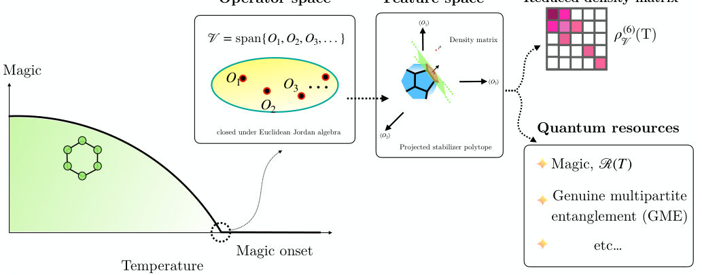
<figcaption class="paper-figure-caption"><b>Fig 1.</b> FIG. 1. A schematic illustration of how the magic witness structure at the onset temperature provides a reduced operator space using which one can obtain a compact representation of the stabilizer polytope, an efficient representation of the reduced density matrix and other quantum resources such as genuine multipartite entanglement, across the entire temperature range.</figcaption>
</figure>
<figure class="paper-figure-card">
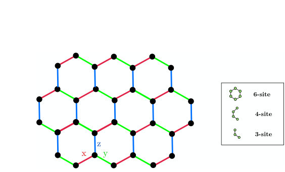
<figcaption class="paper-figure-caption"><b>Fig 2.</b> FIG. 2. Illustration of the Kitaev honeycomb model [Eq. 1], and the three–, four– and six–site marginals investigated in this work.</figcaption>
</figure>
<figure class="paper-figure-card">
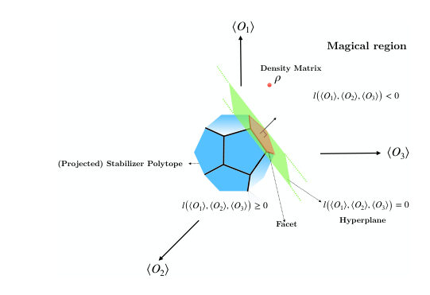
<figcaption class="paper-figure-caption"><b>Fig 3.</b> FIG. 3. A schematic depiction of a three-dimensional feature space. The green plane represents a supporting hyperplane, while the orange face corresponds to its intersection with the projected stabilizer polytope, defining a facet of the polytope.</figcaption>
</figure>
<figure class="paper-figure-card">
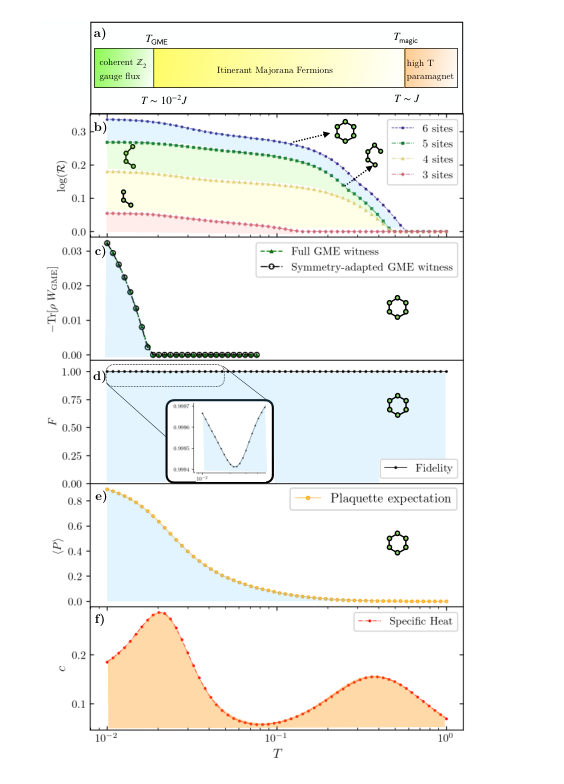
<figcaption class="paper-figure-caption"><b>Fig 4.</b> FIG. 4. Thermal evolution of magic, genuine multipartite en- tanglement, and the reduced operator-space description of the Kitaev honeycomb model. (a) Schematic thermal regimes of the Kitaev spin liquid, showing the onset magic, Tmagic ∼J, and GME, TGME ∼10−2J, relative to the itinerant-Majorana and coherent Z2 flux regimes, as identified in [23]. (b) Log ro- bustness, log(R) of magic for the 3, 4, 5, and 6-site marginals. Upon cooling, the curves should be read from right to left. The six-site marginal showcases magic first, at T ≃0.58, fol- lowed by the other marginals at progressively lower tempera- tures. (c) Expectation value of the GME witness for the six- site marginal, compared with...</figcaption>
</figure>
<figure class="paper-figure-card">
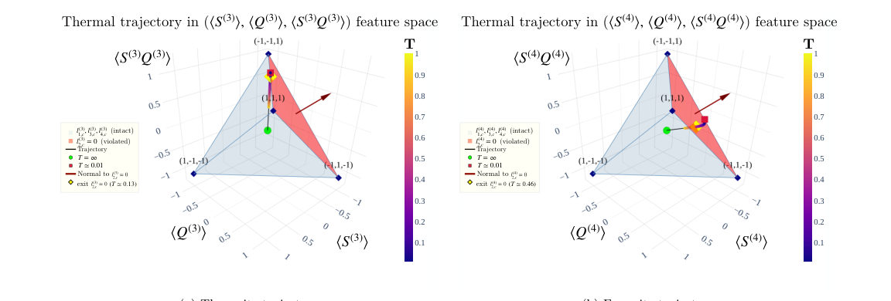
<figcaption class="paper-figure-caption"><b>Fig 5.</b> FIG. 5. Thermal trajectories of the three and four-site reduced density matrices in their corresponding three-dimensional compressed feature spaces. In both cases, the T = ∞(green circle) state lies at the center of the projected stabilizer polytope, a tetrahedron. Upon cooling, the thermal trajectory moves toward the boundary and eventually crosses the highlighted red facet, marking the onset of magic. (a) Three-site marginal in the feature space (⟨S(3)⟩, ⟨Q(3)⟩, ⟨S(3)Q(3)⟩). The yellow diamond marks the trajectory at T ≃0.13, where it reaches the facet supported by the hyperplane in Eq. (58). (b) Four-site marginal in the feature space (⟨S(4)⟩, ⟨Q(4)⟩, ⟨S(4)Q(4)⟩). The yellow diamond...</figcaption>
</figure>
</div>

<p><strong>Summary.</strong> This work introduces 'magic' as a diagnostic tool to probe quantum resources in the Kitaev spin liquid, moving beyond entanglement measures. By analyzing the optimal magic witnesses, the authors show that the local thermal states are constrained to a compact operator space. This space is rigorously characterized as a Euclidean Jordan algebra, offering a powerful, reduced description of the underlying physics.</p>
<p><strong>Why it may be interesting.</strong> The development of a general methodology linking quantum resource diagnostics (magic) to specific, structured algebraic frameworks (EJAs) provides a powerful, reduced description for complex, finite-temperature quantum states in strongly correlated models.</p>
<details>
<summary>Detailed structure</summary>
<p><strong>Main problem.</strong> The paper investigates how the concept of 'magic' (nonstabilizerness) can be used as a diagnostic tool to reveal the underlying compact operator structure governing local quantum resources in many-body systems.</p>
<p><strong>Main result.</strong> The optimal magic witnesses reveal that the local thermal states are governed by compact operator spaces that possess the rich algebraic structure of finite-dimensional Euclidean Jordan algebras.</p>
<p><strong>Method.</strong> The authors use linear programming and optimization techniques to find optimal magic witnesses, which then define an associated operator space whose algebraic structure is analyzed using Majorana fermion representations.</p>
<p><strong>Model / system.</strong> The study focuses on the Kitaev honeycomb model (KHM) for spin-1/2, analyzing local reduced density matrices ($
ho_A$) for subsystems like the three-site and six-site hexagonal plaquette at finite temperature.</p>
<p><strong>Key observables.</strong> Reduced density matrices ($
ho_A$), Robustness of Magic ($ ext{RoM}$), Optimal Magic Witnesses ($W$), and the resulting operator space $V$.</p>
<p><strong>Important parameters / regimes.</strong> Temperature ($eta$), and the specific geometry of the local marginal (e.g., six-site hexagonal plaquette).</p>
<p><strong>Assumptions / limitations.</strong> The analysis relies on the Majorana representation of operators to interpret the algebraic structure of the operator space associated with the stabilizer polytope facets.</p>
<p><strong>Figures summary.</strong> Figures schematically illustrate how the magic witness structure reveals a reduced operator space for describing the stabilizer polytope and genuine multipartite entanglement across temperature. Another figure shows the thermal evolution of the $ ext{RoM}$ for various marginal sizes.</p>
<p><strong>Paper structure.</strong> The paper proceeds by introducing the KHM and the concept of magic, then develops the methodology using $  ext{RoM}$ and optimal witnesses. It applies this to the three-site and six-site marginals, culminating in a detailed algebraic characterization of the resulting operator space.</p>
</details>
<details>
<summary>Abstract</summary>
<p>Quantum many-body systems exhibit rich and complex behaviour. Magic has recently emerged as a powerful new diagnostic for probing such systems, complementing other key features such as many-body entanglement. Here, starting from an investigation of the onset of magic within subsystems of a larger many-body quantum system, we show that intricate structures emerge which shed important light on the underlying many-body physics. Focusing on the Kitaev honeycomb model, we first identify the temperature below which local subsystems acquire magic. Remarkably, we find that the optimal magic witnesses active at the onset of magic reveal compact operator spaces that continue to capture the local thermal states throughout their subsequent evolution. For the six-site hexagonal marginal, this connection can be made stronger: the same operator space emerges independently from the symmetries of the local marginal and forms the symmetry-resolved plaquette algebra. When these symmetries are realized exactly, the local state lies entirely within this algebra and the reduced robustness of magic is equal to the full robustness of magic. The same reduced description can also be applied to other local quantum resources, which we illustrate using genuine multipartite entanglement. Furthermore, the operator spaces possess a rich algebraic structure in the form of finite-dimensional Euclidean Jordan algebras, with a natural interpretation in terms of bond and bond-cycle operators. Our general methodology therefore show how the onset of local magic can reveal a compact, physically meaningful operator structure underlying the finite-temperature Kitaev spin liquid, and opens up a new avenue towards reduced descriptions of quantum resources in many-body systems.</p>
</details>
<p><sub><a href="#top">↑ back to top</a></sub></p>

<p><a id="paper-2609.03513"></a></p>
<h3 id="competing-lattice-structures-induced-by-sn-substitution-in-csvmath448mathsbmath449math"><a href="http://arxiv.org/abs/2609.03513v1">Competing lattice structures induced by Sn substitution in CsV$_3$Sb$_5$</a></h3>
<p><strong>Authors:</strong> Anshu Kataria, Ilija K. Nikolov, Armando Consiglio, Giuseppe Allodi, Ginevra Corsale, Andrea Capa Salinas, Stephen D. Wilson, Domenico Di Sante, Vesna F. Mitrović, Samuele Sanna, Pietro Bonfà<br>
<strong>Type:</strong> both · <strong>Category:</strong> strongly correlated electrons · <strong>PDF:</strong> <a href="https://arxiv.org/pdf/2609.03513v1">https://arxiv.org/pdf/2609.03513v1</a><br>
<strong>Analysis basis:</strong> full PDF text, analyzed in chunks
<strong>Topic relevance:</strong> <code>quantum measurements</code> <strong>2/5</strong> · <code>Frenkel-Kontorova</code> <strong>1/5</strong></p>
<div class="figure-strip-hint">↔ Scroll figures horizontally</div>
<div class="paper-figures-scroll">
<figure class="paper-figure-card">
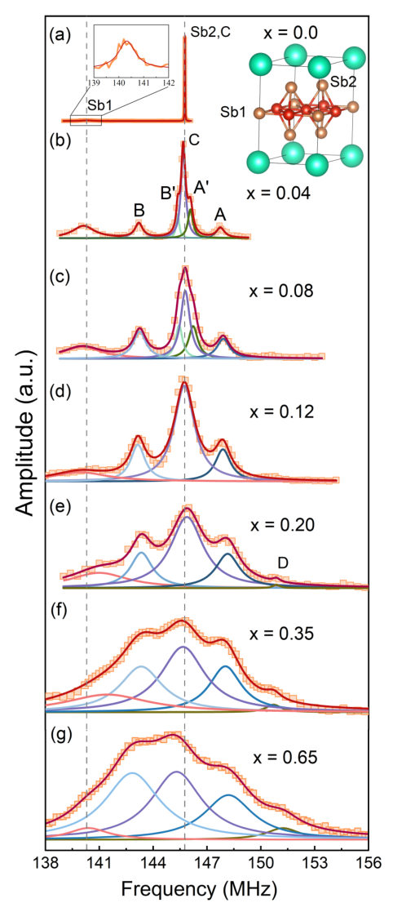
<figcaption class="paper-figure-caption"><b>Fig 1.</b> FIG. 1. Room temperature 121Sb NQR spectra of powdered CsV3Sb5 sample as a function of Sn doping for the 5/2 ↔3/2 transition. In- set shows the RT hexagonal structure of the pristine system and an enlarged view of the broad Sb1 peak. The satellite resonance peak frequencies νQ of Sb2 remain unaffected with increasing doping con- centration and remain symmetric around the central C peak. Vertical dashed lines correspond to the Sb resonance frequencies for the pris- tine sample. The spectral profile is fitted with a multiple Lorentzian distribution, where the differently coloured fitted components repre- sent distinct Sb environments and the solid red curve represents their cumulative fit.</figcaption>
</figure>
<figure class="paper-figure-card">
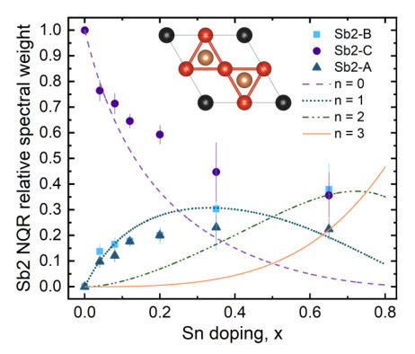
<figcaption class="paper-figure-caption"><b>Fig 2.</b> FIG. 2. Relative spectral weight variation of different Sb2 NQR peaks as a function of Sn doping for RT measurements. Various col- ored lines represent the simple binomial distribution function for Sn at the in-plane Sb1 site. The inset shows the hexagonal structure in the ac-plane with Sn atoms at the Sb1 site, presented by black spheres (Sn-NN). n represents the number of Sn-NN in the vicinity of Sb2 atom, with n = 0 −3 corresponding to different local environ- ments around Sb2. Experimental data can only distinguish the Sb2 atom having at most one Sn atom among the neighbors.</figcaption>
</figure>
<figure class="paper-figure-card">
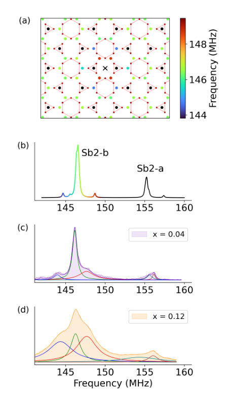
<figcaption class="paper-figure-caption"><b>Fig 3.</b> FIG. 3. Low-temperature 121Sb NQR spectra and computational pre- dictions of the resonant frequencies for 5/2 ↔3/2 transition. DFT- estimated NQR frequencies of Sb2 nuclei mapped on the structural arrangement in panel (a). To better highlight the spatial distribution of the perturbation, only the Sb2-b (i.e., those in the 12o Wyckoff site) are considered, while the remaining Sb2-a sites are indicated as black points for clarity and displayed in an enlarged view. The V atoms are shown as dark red stars, and the Sn atom is shown by the black cross. The predicted spectra for all Sb2 atoms are shown in panel (b). Notice that all values have been shifted by 13.1 MHz to account for systematic...</figcaption>
</figure>
<figure class="paper-figure-card">
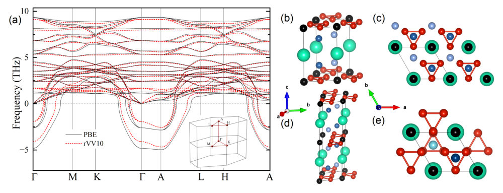
<figcaption class="paper-figure-caption"><b>Fig 4.</b> FIG. 4. (a) Calculated phonon dispersion curves for 100% Sn substitution at the in-plane site of hexagonal CsV3Sb4Sn with PBE and rVV10 interactions. Phonon softening is observed at Γ and A high-symmetry points. The inset shows the Brillouin zone along the main symmetry directions. (b-c) show the newly identified Γ crystal structure due to the softening of the zone-centre phonon mode in the bc and ab plane, respectively, creating the V-triangles and two symmetry-inequivalent Sb2 sites (light and dark blue spheres). (d-e) display the A crystal structure, which has the same in-plane arrangement of V atoms, but staggered along the c-axis with a π-phase between the adjacent layers.</figcaption>
</figure>
</div>

<p><strong>Summary.</strong> This work uses NQR spectroscopy and DFT calculations to map the structural consequences of Sn doping in the kagome metal $ ext{CsV}_3  ext{Sb}_5$. The findings reveal that Sn substitution causes measurable local lattice distortions, and theoretically predicts that the system favors competing, structurally distinct ground states at high doping levels.</p>
<p><strong>Why it may be interesting.</strong> The interplay between structural distortions (local effects) and electronic instabilities (global phase transitions) in low-dimensional, strongly correlated materials is a key area of modern condensed matter physics, relevant to understanding charge density waves and superconductivity.</p>
<details>
<summary>Detailed structure</summary>
<p><strong>Main problem.</strong> The study investigates how chemical substitution (Sn for Sb) modifies the competing lattice structures and electronic phase diagram in kagome metals like CsV3Sb5.</p>
<p><strong>Main result.</strong> Sn substitution induces local structural distortions observable via NQR, and at full doping, theoretical analysis suggests the stabilization of two nearly degenerate V-trimerized structures characterized by specific phase shifts.</p>
<p><strong>Method.</strong> The research combines experimental $^{121}$Sb Nuclear Quadrupole Resonance (NQR) measurements with first-principles Density Functional Theory (DFT) calculations to probe atomic-scale effects.</p>
<p><strong>Model / system.</strong> The system is the kagome metal $    ext{CsV}<em 5-x>3  ext{Sb}</em>_x$. The analysis focuses on how Sn impurities perturb the local electronic environment and drive structural instabilities in the V-based kagome lattice.}   ext{Sn</p>
<p><strong>Key observables.</strong> NQR satellite peaks, local structural distortions, and the stabilization of V-trimerized phases with zero- or $\pi$-phase shifts.</p>
<p><strong>Important parameters / regimes.</strong> Doping concentration ($x$), temperature (up to room temperature), and the specific site of substitution ($  ext{Sb}_1$ site).</p>
<p><strong>Assumptions / limitations.</strong> The analysis often relies on modeling the doping effect using random site occupancy models (binomial distribution) and assumes that the observed NQR features correlate directly with local structural changes.</p>
<p><strong>Figures summary.</strong> Figures illustrate the evolution of NQR spectra with Sn doping, showing the emergence of satellite peaks, and show phonon dispersion curves indicating lattice instabilities for the fully doped case.</p>
<p><strong>Paper structure.</strong> The paper proceeds by first analyzing the experimental NQR data to show impurity-induced local distortions across a doping range, then using DFT and phonon calculations to predict the structural consequences, culminating in the identification of competing, nearly degenerate ground states at high doping.</p>
</details>
<details>
<summary>Abstract</summary>
<p>Understanding the effect of chemical substitution on competing phases of kagome metals is crucial for disentangling the interplay between local structural distortions and electronic instabilities. In \cvs, Sn substitution strongly modifies the electronic phase diagram, yet the microscopic mechanism driving this remains unclear. Here, we combine $^{121}$Sb nuclear quadrupole resonance (NQR) measurements and density functional theory calculations to investigate the atomic-scale effects of Sn substitution in CsV$_3$Sb$_{5-x}$Sn$_x$. At low Sn concentrations, the observed satellite NQR peaks exhibit signatures of local structural distortion induced by Sn substitution, qualitatively consistent with our computational analysis. These impurity-induced features persist across the entire experimentally investigated doping range, up to $x$ = 0.65, and remain observable up to room temperature. For $x=1$, the fully doped idealized case, the estimated dynamical instabilities of the kagome lattice suggest the stabilization of two nearly energy-degenerate equilibrium structures characterized by V-trimers, distinguished by a zero- or $π$-phase shift between adjacent layers along the $c$-axis. Together, these results show that Sn substitution drives a complex interplay between local impurity-induced distortions and competing structural instabilities in vanadium-based kagome compounds.</p>
</details>
<p><sub><a href="#top">↑ back to top</a></sub></p>

<p><a id="paper-2609.03272"></a></p>
<h3 id="discrete-time-quantum-walks-with-energy-dependent-coins"><a href="http://arxiv.org/abs/2609.03272v1">Discrete-time quantum walks with energy-dependent coins</a></h3>
<p><strong>Authors:</strong> Alana Spak dos Santos, Thiago T. Tsutsui, Fabiano M. Andrade<br>
<strong>Type:</strong> theory · <strong>Category:</strong> other · <strong>PDF:</strong> <a href="https://arxiv.org/pdf/2609.03272v1">https://arxiv.org/pdf/2609.03272v1</a><br>
<strong>Analysis basis:</strong> full PDF text, analyzed in chunks
<strong>Topic relevance:</strong> <code>analog quantum simulation</code> <strong>2/5</strong> · <code>Frenkel-Kontorova</code> <strong>1/5</strong></p>
<div class="figure-strip-hint">↔ Scroll figures horizontally</div>
<div class="paper-figures-scroll">
<figure class="paper-figure-card">
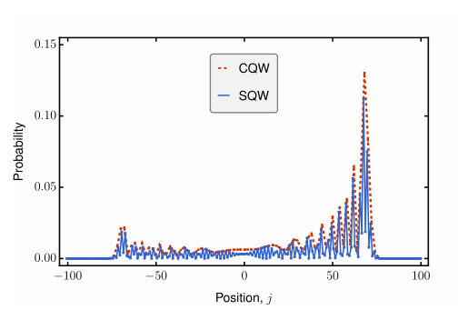
<figcaption class="paper-figure-caption"><b>Fig 1.</b> FIG. 1. The blue curve is obtained from Eq. (11) and shows the probabilities for the SQW with n = 100 steps, |ψ(0)⟩= |+, 0⟩and r = t = 1/ √</figcaption>
</figure>
<figure class="paper-figure-card">
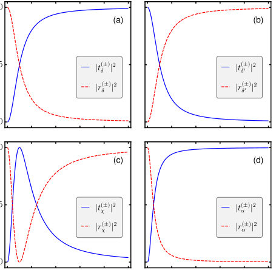
<figcaption class="paper-figure-caption"><b>Fig 2.</b> FIG. 2. Reflection (dashed red line) and transmission (solid blue line) probabilities for γ = 1 as a function of the wavenumber k for the point interactions: (a) δ, (b) δ′, (c) χ, and (d) α.</figcaption>
</figure>
<figure class="paper-figure-card">
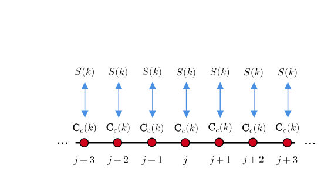
<figcaption class="paper-figure-caption"><b>Fig 3.</b> FIG. 3. Schematic representation of the point interactions in a linear quantum graph, and the associated S -matrix and energy-dependent coin operators.</figcaption>
</figure>
<figure class="paper-figure-card">
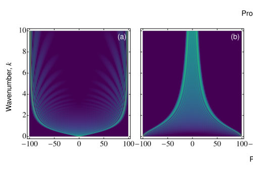
<figcaption class="paper-figure-caption"><b>Fig 4.</b> FIG. 4. Density plot of the probability distribution for k ∈[0, 10], γ = 1 and initial state |ψ(0)⟩= 1/ √</figcaption>
</figure>
<figure class="paper-figure-card">
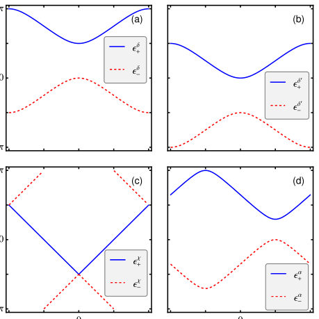
<figcaption class="paper-figure-caption"><b>Fig 5.</b> FIG. 5. Quasienergy eigenvalues for the point interactions with k = γ = 1: (a) δ, (b) δ′, (c) χ, and (d) α.</figcaption>
</figure>
</div>

<p><strong>Summary.</strong> This paper develops a theoretical model for discrete-time quantum walks by mapping them onto a lattice of energy-dependent point interactions. By relating the coin operator to the scattering matrix, the authors show that the walk's spectral properties and entanglement dynamics are controlled by the transmission coefficient. This framework is valuable for understanding wave propagation in structured media.</p>
<p><strong>Why it may be interesting.</strong> It provides a powerful, physically transparent link between wave scattering theory (Kronig-Penney type potentials) and the dynamics of quantum walks, offering tunable control over spectral gaps and entanglement via the energy parameter.</p>
<details>
<summary>Detailed structure</summary>
<p><strong>Main problem.</strong> The work extends the scattering quantum walk (SQW) framework to model discrete-time quantum walks (DTQWs) on a lattice featuring energy-dependent point interactions.</p>
<p><strong>Main result.</strong> The transmission modulus controls the quasienergy gap, bandwidth, and long-time coin-position entanglement, while different point interaction types yield distinct spreading and entanglement behaviors.</p>
<p><strong>Method.</strong> The analysis compares the Coined Quantum Walk (CQW) and Scattering Quantum Walk (SQW) formalisms, utilizing the scattering matrix derived from zero-range potentials to define an energy-dependent coin operator.</p>
<p><strong>Model / system.</strong> The model is a DTQW analog of a periodic array of point interactions, mathematically realized by relating the coin operator to the scattering matrix of zero-range potentials, allowing the walker's wavenumber to act as a continuous control parameter.</p>
<p><strong>Key observables.</strong> Quasienergy spectrum, spatial probability distribution, and coin-position entanglement.</p>
<p><strong>Important parameters / regimes.</strong> The walker's wavenumber (energy $k$), the transmission modulus $|t(k)|$, and the specific type of point interaction ($\delta, \delta', 	ext{crossed, asymmetric}$).</p>
<p><strong>Assumptions / limitations.</strong> The dynamics are analyzed by assuming the scattering matrix $S(k)$ and coin operator $C_c(k)$ are uniform across all vertices at a fixed energy $k$.</p>
<p><strong>Figures summary.</strong> Figures compare probability curves for SQW and CQW, show reflection/transmission probabilities vs. $k$ for four interaction types, and illustrate the time evolution of entanglement for these cases.</p>
<p><strong>Paper structure.</strong> The paper establishes the equivalence between CQW and SQW, derives the energy-dependent coin operator from scattering theory, analyzes the spectral properties using the transmission modulus, and finally characterizes the long-time entanglement behavior for various point interactions.</p>
</details>
<details>
<summary>Abstract</summary>
<p>In this work, we extend the scattering quantum walk (SQW) framework to a lattice of energy-dependent point interactions. This yields, within the coined quantum walk (CQW) formalism, a coin operator that is directly related to the scattering matrix of zero-range potentials. The model thus provides a discrete-time quantum-walk (DTQW) analog of a periodic array of point interactions of the Kronig-Penney type, where the walker's wavenumber serves as a continuous, physically transparent control parameter for the coin operation. We analyze the spectra and the dynamics of position probability and entanglement, yielding distinct results for specific energies and point interactions. We relate the spectral structure to the spatial probability distribution and explicitly characterize the long-time entanglement behavior for each point interaction. The transmission modulus determines the quasienergy gap, bandwidth, and maximum group velocity, while also controlling the long-time coin-position entanglement for the initial state considered. The four families of one-dimensional point interactions ($δ$, $δ'$, crossed and asymmetric) realize qualitatively distinct transmission profiles and span the full range of behavior, including enhanced or strongly suppressed spreading and oscillatory entanglement.</p>
</details>
<p><sub><a href="#top">↑ back to top</a></sub></p>

<p><a id="paper-2609.04104"></a></p>
<h3 id="gravitationally-induced-entanglement-across-an-event-horizon"><a href="http://arxiv.org/abs/2609.04104v1">Gravitationally Induced Entanglement Across an Event Horizon</a></h3>
<p><strong>Authors:</strong> Hatim Salih<br>
<strong>Type:</strong> theory · <strong>Category:</strong> quantum information and computing · <strong>PDF:</strong> <a href="https://arxiv.org/pdf/2609.04104v1">https://arxiv.org/pdf/2609.04104v1</a><br>
<strong>Analysis basis:</strong> full PDF text, analyzed in chunks
<strong>Topic relevance:</strong> <code>quantum measurements</code> <strong>2/5</strong> · <code>correlated / nonlocal dissipation</code> <strong>1/5</strong></p>
<div class="figure-strip-hint">↔ Scroll figures horizontally</div>
<div class="paper-figures-scroll">
<figure class="paper-figure-card">
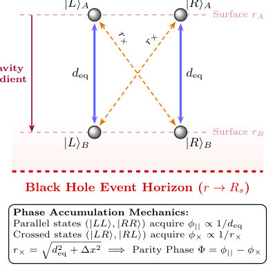
<figcaption class="paper-figure-caption"><b>Fig 1.</b> FIG. 2. Geometry of the Gravitational Parity-Phase gate. Preparing the spatial superpositions tangentially generates genuine bipartite entanglement while mitigating differential redshift and causal severing.</figcaption>
</figure>
<figure class="paper-figure-card">
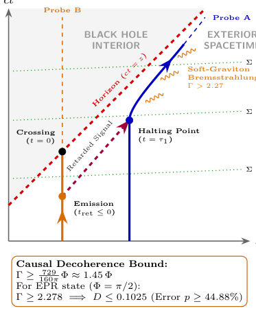
<figcaption class="paper-figure-caption"><b>Fig 2.</b> FIG. 1. Spacetime diagram. Retarded signals (purple) prop- agate from Probe B’s pre-crossing history. To escape engulf- ment, Probe A undergoes rapid, non-inertial radial decelera- tion, triggering soft-graviton emission (orange) that exponen- tially degrades entanglement.</figcaption>
</figure>
<figure class="paper-figure-card">
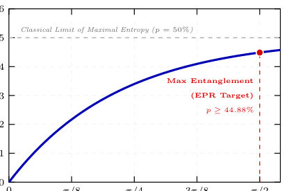
<figcaption class="paper-figure-caption"><b>Fig 3.</b> FIG. 3. Extraction error rate p vs. accumulated phase. Un- der optimal extraction bounds, pulling a state radially en- forces p ≥44.88% for maximally entangled targets, destroy- ing quantum utility.</figcaption>
</figure>
<figure class="paper-figure-card">
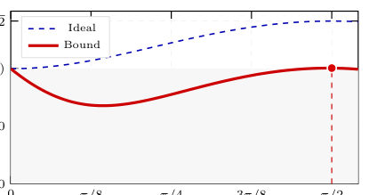
<figcaption class="paper-figure-caption"><b>Fig 4.</b> FIG. 4. CHSH expectation value. Bounded radial extraction severely suppresses correlations near classicality.</figcaption>
</figure>
</div>

<p><strong>Summary.</strong> This work demonstrates that entanglement can be generated across a black hole event horizon using gravitational interactions. However, it finds that attempting to extract this entanglement radially causes severe decoherence via soft-graviton emission. A key finding is the geometric duality showing that tangential harvesting protocols can bypass this decoherence, allowing entanglement to be effectively teleported to the exterior.</p>
<p><strong>Why it may be interesting.</strong> It provides a novel, extreme gravitational setting to test fundamental principles of quantum information preservation, linking quantum entanglement dynamics directly to general relativity and Hawking radiation analogues.</p>
<details>
<summary>Detailed structure</summary>
<p><strong>Main problem.</strong> The paper challenges the assumption that entanglement cannot be dynamically created across a black hole event horizon, and compares the feasibility of radial versus tangential entanglement extraction.</p>
<p><strong>Main result.</strong> Dynamical entanglement can be created across the horizon, but radial extraction is severely limited by soft-graviton bremsstrahlung, whereas tangential harvesting via optical probes allows for state teleportation to infinity.</p>
<p><strong>Method.</strong> The analysis uses a gravitational retarded-potential model and quantum information protocols, including Bell-state measurements and decoherence analysis based on the Horodecki criterion.</p>
<p><strong>Model / system.</strong> The system involves two macroscopic optical probes (A and B) falling across a Schwarzschild black hole event horizon, modeled using retarded Liénard-Wiechert potentials and quantum state manipulation techniques.</p>
<p><strong>Key observables.</strong> Entangling Phase ($\Phi$), Decoherence Bound ($\Gamma$), Extraction Error Rate ($p$), and CHSH expectation value.</p>
<p><strong>Important parameters / regimes.</strong> The decoherence bound $\Gamma \ge rac{729}{160\pi} \Phi$, and the minimum variational constant $C^* = 27/16$.</p>
<p><strong>Assumptions / limitations.</strong> The model relies on a leading-order quadrupole approximation and assumes the use of macroscopic optical probes to manage recoil and bypass acoustic shattering.</p>
<p><strong>Figures summary.</strong> Figures illustrate the spacetime diagram of retarded signals and soft-graviton emission during radial escape, and show the extraction error rate and suppressed CHSH correlations for radial versus tangential protocols.</p>
<p><strong>Paper structure.</strong> The paper first establishes the theoretical possibility of entanglement generation across the horizon using a gravitational potential model. It then contrasts the highly decohering process of radial extraction with the successful, symmetry-preserving protocol of tangential entanglement harvesting.</p>
</details>
<details>
<summary>Abstract</summary>
<p>It has long been assumed that a particle---having crossed a black hole event horizon unentangled with another particle in the exterior universe---can no longer dynamically entangle with that particle. Here, we demonstrate within a gravitational retarded-potential model that entanglement can in fact be created from scratch between freely falling spatial superpositions across an event horizon. Yet, extracting this state radially requires non-inertial deceleration, triggering soft-graviton bremsstrahlung, and establishing a strict dephasing bound in terms of entangling phase, $Γ\ge\frac{729}{160π}Φ$. This decoheres the entangled state. By contrast, equivalent macroscopic optical masses allow local tangential harvesting of entanglement via quantum erasure, thus revealing a remarkable geometric duality: Spacetime irreversibly degrades entanglement the moment the localized mass is dragged away from the horizon, while allowing the transverse teleportation of its entangled state to infinity.</p>
</details>
<p><sub><a href="#top">↑ back to top</a></sub></p>

<p><a id="paper-2609.03092"></a></p>
<h3 id="non-kolmogorov-arnold-moser-quantum-sensors-for-quantum-parameter-estimation"><a href="http://arxiv.org/abs/2609.03092v1">Non-Kolmogorov-Arnold-Moser Quantum Sensors for Quantum Parameter Estimation</a></h3>
<p><strong>Authors:</strong> Naga Dileep Varikuti, Sourav Manna, Athreya Shankar, Arul Lakshminarayan, Vaibhav Madhok<br>
<strong>Type:</strong> theory · <strong>Category:</strong> statistical mechanics · <strong>PDF:</strong> <a href="https://arxiv.org/pdf/2609.03092v1">https://arxiv.org/pdf/2609.03092v1</a><br>
<strong>Analysis basis:</strong> full PDF text, analyzed in chunks
<strong>Topic relevance:</strong> <code>analog quantum simulation</code> <strong>2/5</strong> · <code>quantum measurements</code> <strong>1/5</strong></p>
<div class="figure-strip-hint">↔ Scroll figures horizontally</div>
<div class="paper-figures-scroll">
<figure class="paper-figure-card">
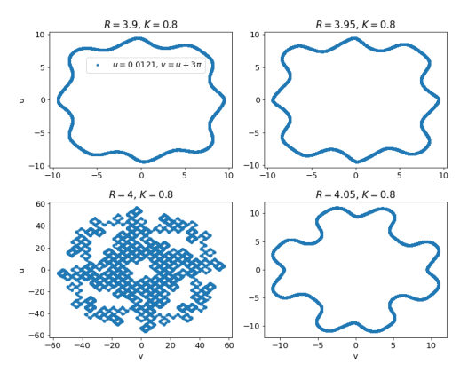
<figcaption class="paper-figure-caption"><b>Fig 1.</b> FIG. 1. Classical phase-space trajectories for a fixed initial condi- tion at four different values of R in the vicinity of R = 4. The initial condition is u = 0.0121 and v = u + 3π. The kicking strength is fixed at K = 0.8 in all panels. Panels (a), (b), and (d) correspond to the non-resonant regime, where the trajectory associated with the chosen initial condition undergoes only a slight distortion. In contrast, panel (c) corresponds to the resonant case, R = 4, where the trajectory ex- plores an extended region of phase space and forms a thick stochastic web.</figcaption>
</figure>
<figure class="paper-figure-card">
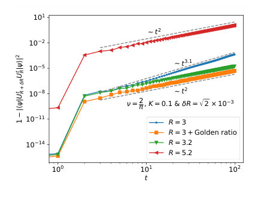
<figcaption class="paper-figure-caption"><b>Fig 2.</b> FIG. 2. Evolution of the Loschmidt echo for the quantum KHO sys- tem near the resonance point. The system is initialized in the vacuum quantum state |0⟩. R = 3 is the resonance point, and the remaining three cases correspond to dynamical localization. The dashed style lines are plotted to demonstrate the time scalings of the LE.</figcaption>
</figure>
<figure class="paper-figure-card">
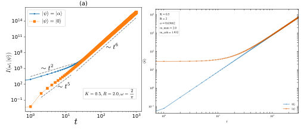
<figcaption class="paper-figure-caption"><b>Fig 3.</b> FIG. 4. Time evolution of the QFI under translational invariance. (a) QFI at the resonance R = 2 for the vacuum state |0⟩and a co- herent state located in phase space at (x, p) = (0.0121 + 3π, 0.0121). Here K = 0.5 and ω = 2/π, with τ = π2/2 so that ωτ = 2π/R at R = 2. The dashed lines illustrate the respective time scalings of the QFI of the two states. (b) The corresponding growth of the mean excitation number ⟨ˆn⟩for the same states, confirming the quadratic energy growth underlying the hexic QFI scaling.</figcaption>
</figure>
<figure class="paper-figure-card">
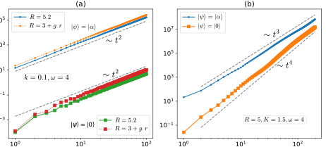
<figcaption class="paper-figure-caption"><b>Fig 4.</b> FIG. 3. Evolution of the QFI for the vacuum quantum state |0⟩and a coherent state located in phase space at (x, p) = (−0.5903, −8.1437). (a) The QFI is plotted against time at non-resonance points: R = 5.2 and R = 3+g.r, where g.r stands for the golden ratio. The growth follows the quadratic law for both states. The dashed lines are plotted to demonstrate the same. (b) The QFI vs time at resonance R = 5. The same initial states are used as in (a). To ensure delocalization, we take K = 1.5. We obtain quartic scaling for the vacuum state. The coherent state displays cubic scaling.</figcaption>
</figure>
<figure class="paper-figure-card">
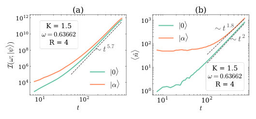
<figcaption class="paper-figure-caption"><b>Fig 5.</b> FIG. 6. Time evolution of the QFI at the resonance R = 4. (a) QFI for the vacuum state |0⟩and a coherent state located in phase space at (x, p) = (−0.5903, −8.1437). Here K = 1.5 and ω = 2/π, with τ = π2/4 so that ωτ = 2π/R at R = 4. (b) The corresponding growth of the mean energy ⟨ˆn⟩for the same states. The dashed lines illustrate the respective time scalings of the QFI and mean energy.</figcaption>
</figure>
</div>

<p><strong>Summary.</strong> This work explores using non-KAM quantum systems, modeled by the Kicked Harmonic Oscillator, for enhanced quantum sensing. By calculating the Quantum Fisher Information (QFI), the authors demonstrate that resonance conditions lead to a unique, highly enhanced polynomial growth in QFI. This identifies resonance-induced symmetry as a powerful, distinct metrological resource.</p>
<p><strong>Why it may be interesting.</strong> It provides a concrete, physically realizable mechanism (resonance-induced symmetry) for achieving super-classical scaling in quantum metrology, offering a resource distinct from traditional chaos-based enhancements.</p>
<details>
<summary>Detailed structure</summary>
<p><strong>Main problem.</strong> The paper investigates utilizing non-Kolmogorov-Arnold-Moser (non-KAM) systems as quantum sensors to enhance quantum parameter estimation.</p>
<p><strong>Main result.</strong> The Quantum Fisher Information (QFI) is remarkably enhanced at resonance conditions, exhibiting anomalous hexic growth ($I(t) \sim t^6$) which is distinct from standard chaos-assisted sensing.</p>
<p><strong>Method.</strong> The study combines numerical analysis with analytical derivations to compute the QFI, relating its growth rate to the algebraic growth of the mean excitation number ($\langle\hat{n}(t)
angle \sim t^\alpha$).</p>
<p><strong>Model / system.</strong> The primary model is the Kicked Harmonic Oscillator (KHO), a paradigmatic non-KAM system, whose dynamics are governed by a time-periodic Hamiltonian involving harmonic oscillator terms and periodic kicks.</p>
<p><strong>Key observables.</strong> Quantum Fisher Information (QFI), Loschmidt Echo (LE), and the mean excitation number $\langle\hat{n}(t)
angle$.</p>
<p><strong>Important parameters / regimes.</strong> The commensurability parameter $R = 2\pi/\omega	au$, which dictates whether the system is resonant or non-resonant.</p>
<p><strong>Assumptions / limitations.</strong> The analysis relies on the assumption that the enhancement stems from resonance-induced translational symmetry rather than exponential instability, and the QFI is bounded by $I(t) \lesssim t^{2\alpha+2}$.</p>
<p><strong>Figures summary.</strong> The notes mention comparing LE behavior for different resonance conditions, showing enhanced growth at resonance points.</p>
<p><strong>Paper structure.</strong> The paper introduces QFI, details the KHO model, presents main results comparing growth rates ($\alpha=0, 1, 2$), elucidates the role of translation invariance, and compares the findings with classical Fisher Information.</p>
</details>
<details>
<summary>Abstract</summary>
<p>Non-KAM (Kolmogorov-Arnold-Moser) systems, when subjected to weak time-dependent perturbations, exhibit an abrupt transition to classical chaos through the breakdown of invariant phase-space tori. We showcase the utilization of non-KAM systems in the quantum regime as quantum sensors, leveraging their sensitivity at \textit{resonances}. Quantum Fisher information (QFI) is a central quantity in quantum parameter estimation theory that measures how much information a quantum state contains about an unknown parameter that is encoded into it. In other words, it quantifies the sensitivity of a quantum state to small changes in that parameter. In this work, through numerical analysis in conjunction with analytical results, we study the performance of the non-KAM systems for quantum sensing applications by computing the QFI. We find that the growth of the QFI is remarkably enhanced when the resonance condition is satisfied. For frequency estimation under Floquet unitary encodings, we derive a transport bound: if the mean excitation number grows as $\langle\hat n(t)\rangle\sim t^α$, the QFI obeys $I(t)\lesssim t^{2α+2}$. The quantum kicked harmonic oscillator, a paradigmatic non-KAM system, realizes the full hierarchy: localized dynamics ($α=0$) yield quadratic growth, delocalized diffusion along stochastic webs ($α=1$) yields quartic growth, and translationally invariant resonances ($α=2$) saturate the bound with anomalous hexic growth, $I(t)\sim t^{6}$, established analytically at resonance $R=2$ and numerically at $R=4$. The enhancement stems from resonance-induced translational symmetry rather than exponential instability, identifying non-KAM resonances as a metrological resource distinct from chaos-assisted and criticality-based sensing.</p>
</details>
<p><sub><a href="#top">↑ back to top</a></sub></p>

<p><a id="paper-2609.03075"></a></p>
<h3 id="orbital-current-rectifier-and-linear-magnon-edelstein-effect-in-math490math-wave-antialtermagnets"><a href="http://arxiv.org/abs/2609.03075v1">Orbital current rectifier and linear magnon Edelstein effect in $p$-wave antialtermagnets</a></h3>
<p><strong>Authors:</strong> Kristian Mæland, Björn Trauzettel<br>
<strong>Type:</strong> theory · <strong>Category:</strong> statistical mechanics · <strong>PDF:</strong> <a href="https://arxiv.org/pdf/2609.03075v1">https://arxiv.org/pdf/2609.03075v1</a><br>
<strong>Analysis basis:</strong> full PDF text, analyzed in chunks
<strong>Topic relevance:</strong> <code>analog quantum simulation</code> <strong>2/5</strong> · <code>Keldysh / 2PI / non-Gaussian methods</code> <strong>1/5</strong></p>
<div class="figure-strip-hint">↔ Scroll figures horizontally</div>
<div class="paper-figures-scroll">
<figure class="paper-figure-card">
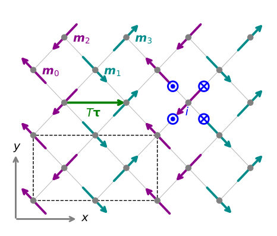
<figcaption class="paper-figure-caption"><b>Fig 1.</b> FIG. 1. Schematic of the magnetic ground state on the rotated square lattice with spins represented by arrows. The magenta and cyan color on arrows emphasizes the Tτ symmetry illustrated by the green ar- row. The dashed rectangle is the magnetic unit cell. The blue vectors denote the out-of-plane DMI vectors Di,j from a site i to its nearest neighbors j.</figcaption>
</figure>
<figure class="paper-figure-card">
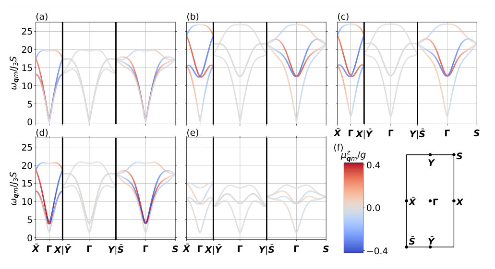
<figcaption class="paper-figure-caption"><b>Fig 2.</b> FIG. 2. (a)-(e) Magnon spectrum ωqm along high-symmetry directions in the first Brillouin zone (1BZ) demonstrating a px-wave momentum dependence of the z component of the magnon magnetic moment µqm in all four modes. (f) Colorbar for µz qm and an illustration of the 1BZ with high-symmetry points Γ = (0, 0), X = (π/2 √</figcaption>
</figure>
<figure class="paper-figure-card">

<figcaption class="paper-figure-caption"><b>Fig 3.</b> FIG. 3. Magnon bands at q0 = (0.3, 0) as a function of magnetic field in (a) x or y direction and (b) z direction. We consider param- eter set d in Table I and update the GS depending on the magnetic field.</figcaption>
</figure>
<figure class="paper-figure-card">
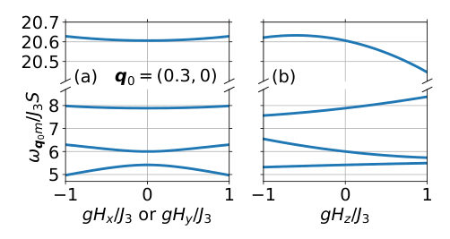
<figcaption class="paper-figure-caption"><b>Fig 4.</b> Figure 2(b) adds Kz = 0.2J3 and D = 0.5J3 to stabilize the state, in which case J1 ̸= 0 is also allowed. A single Gold- stone mode remains, due to the continuous rotation symmetry around the z axis. The easy-plane anisotropy breaks the pre- vious rotation symmetries around the x and y axes. Then, in Fig. 2(c), we add easy-axis anisotropy and get a gapped magnon spectrum. No continuous symmetries remain. In Fig. 2(d), we remove DMI. By comparing Figs. 2(c) and 2(d), we see the role of DMI is to increase the energy of the three magnon modes with highest energy, especially close to Γ. While we do not show it in the figure, the main role played by B2 and B3 is to increase the magnon energy at Y...</figcaption>
</figure>
<figure class="paper-figure-card">
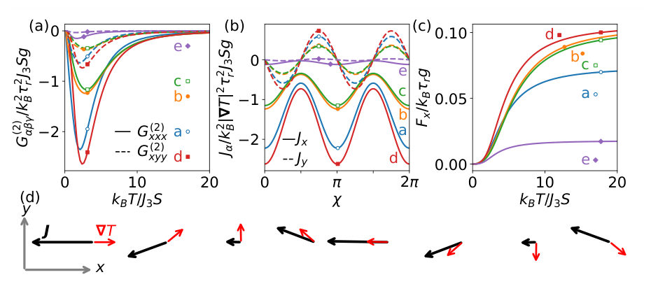
<figcaption class="paper-figure-caption"><b>Fig 5.</b> FIG. 4. (a) The nonzero orbital current transport coefficients G(2) xxx (solid lines) and G(2) xyy = G(2) yxy = G(2) yyx (dashed lines). (b) x (solid lines) and y (dashed lines) components of the orbital current J as a function of the direction of the temperature gradient at kBT/J3S = 2.6. (c) The nonzero linear magnon Edelstein effect coefficient Fx. In panels (a)-(c) we show results for the five parameter sets a-e in Table I, as indicated. (d) Schematic of the current J (black arrows, length showing variation in magnitude) depending on the direction of the applied temperature gradient ∇T (red, thinner arrows).</figcaption>
</figure>
</div>

<p><strong>Summary.</strong> This work theoretically analyzes how $p$-wave antialtermagnets can generate magnetization and nonreciprocal orbital currents using magnons. The key finding is that the orbital magnetic moments of these magnons mediate a linear thermal Edelstein effect. This connects the fields of magnonics and orbitronics by showing how thermal gradients can induce orbital currents.</p>
<p><strong>Why it may be interesting.</strong> The connection between magnon orbital moments, thermal gradients, and resulting currents provides a novel mechanism for controlling quantum states using thermal energy, which is relevant for understanding energy transport in quantum materials.</p>
<details>
<summary>Detailed structure</summary>
<p><strong>Main problem.</strong> The paper investigates the generation of magnetization and nonreciprocal orbital currents in $p$-wave antialtermagnets via magnon excitations.</p>
<p><strong>Main result.</strong> These magnets efficiently generate magnetization via a linear thermal Edelstein effect from orbital magnetic moments, and they exhibit perfectly nonreciprocal orbital currents through even-order nonlinear responses.</p>
<p><strong>Method.</strong> The analysis relies on symmetry arguments, linear spin wave theory, and the application of the Boltzmann equation to the magnon distribution function.</p>
<p><strong>Model / system.</strong> The system is modeled using a generalized Heisenberg spin Hamiltonian incorporating various exchange, anisotropy, and Dzyaloshinskii-Moriya interactions, applied to a coplanar ground state inspired by CeNiAsO.</p>
<p><strong>Key observables.</strong> Magnon spin ($\mathbf{s}_{qm}$), orbital magnetic moment ($\mu_{qm}$), thermal magnon Edelstein effect, and nonreciprocal orbital currents.</p>
<p><strong>Important parameters / regimes.</strong> The analysis considers the presence or absence of spin-orbit coupling and the specific nature of the $p$-wave magnetic ordering.</p>
<p><strong>Assumptions / limitations.</strong> The analysis assumes the existence of a coplanar ground state and utilizes approximations like the relaxation time in the Boltzmann equation.</p>
<p><strong>Figures summary.</strong> Figure 1 schematically shows the magnetic ground state on a rotated square lattice. Figure 2 displays the magnon spectrum ($\omega_{qm}$) along high-symmetry directions, highlighting $p_x$-wave momentum dependence.</p>
<p><strong>Paper structure.</strong> The paper establishes the theoretical framework using a complex spin Hamiltonian, analyzes the magnon spectrum and properties using linear spin wave theory, and then derives transport coefficients by solving the Boltzmann equation to determine the temperature and gradient responses.</p>
</details>
<details>
<summary>Abstract</summary>
<p>We show that $p$-wave magnets efficiently generate magnetization via a linear thermal Edelstein effect arising from the orbital magnetic moments of their magnons. Furthermore, they can generate perfectly nonreciprocal orbital currents through a purely even-order nonlinear response. This makes them promising candidates for orbital-current rectification. Because these transport phenomena originate from the orbital magnetic moment of magnons, they connect magnonics and orbitronics. More generally, we find that odd-parity-wave magnets with coplanar ground states host magnons with zero spin magnetic moment. Instead the magnons carry a collinear, out-of-plane orbital magnetic moment, realizing an orbital version of antialtermagnetism. We establish these general results using symmetry arguments and demonstrate them explicitly for a coplanar ground state with the minimal number of sublattices, inspired by the ground state of CeNiAsO. Our conclusions hold both in absence and presence of spin-orbit coupling.</p>
</details>
<p><sub><a href="#top">↑ back to top</a></sub></p>

<p><a id="paper-2609.03852"></a></p>
<h3 id="design-principles-for-reproducible-networks"><a href="http://arxiv.org/abs/2609.03852v1">Design Principles for Reproducible Networks</a></h3>
<p><strong>Authors:</strong> Jasper van der Kolk, Cory Glover, Albert-Lásló Barabási<br>
<strong>Type:</strong> theory · <strong>Category:</strong> disordered systems and neural networks · <strong>PDF:</strong> <a href="https://arxiv.org/pdf/2609.03852v1">https://arxiv.org/pdf/2609.03852v1</a><br>
<strong>Analysis basis:</strong> full PDF text, analyzed in chunks
<strong>Topic relevance:</strong> <code>analog quantum simulation</code> <strong>2/5</strong></p>
<div class="figure-strip-hint">↔ Scroll figures horizontally</div>
<div class="paper-figures-scroll">
<figure class="paper-figure-card">
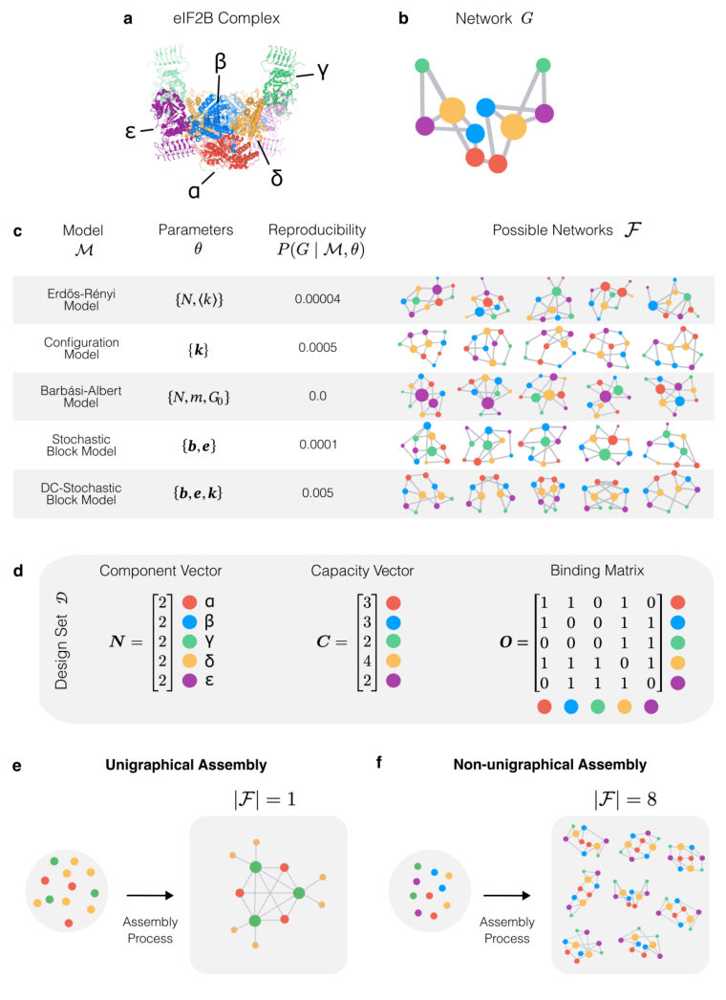
<figcaption class="paper-figure-caption"><b>Fig 1.</b> Figure 1. The Network Design Framework. a,b The protein complex eIF2B, consisting of 10 proteins as shown in a, is formally described by the network shown in b, where each node is colored by its associated protein type. c Using the established network science models, adapted to the constraints of the network in b, we find that the probability of producing the correct structure is rather small. For example, fixing N = 10 and ⟨k⟩= 2.8, the Erd˝os–Rényi model recovers the network behind the protein complex with probability 0.00004. Other canonical network models shown in the table are also unable to reliably reconstruct the network. d The Design Set and its three building blocks: the component...</figcaption>
</figure>
<figure class="paper-figure-card">
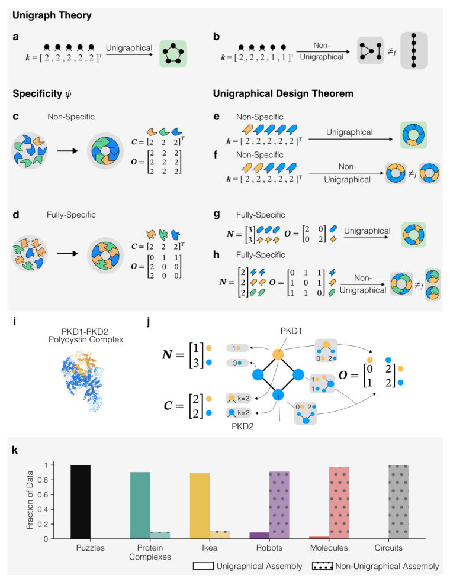
<figcaption class="paper-figure-caption"><b>Fig 2.</b> Figure 2. Network Design via Unigraphical Assembly and the Unigraphical Design Theorem. a,b Unigraph theory [26] allows us to determine if a degree sequence is compatible with a unique graph. c,d The specificity of a design set D tells us how restrictive the interactions are. If all nodes can connect to all others, D is non-specific, as shown in c. If each node can only connect to a predefined set of neighbors, D is fully specific, as illustrated in d. e,f In network design, we distinguish different node types, shown in color in the figure. The distribution of the colors over the network can lead to different outcomes, even if the underlying network stays fixed. We show examples of...</figcaption>
</figure>
<figure class="paper-figure-card">
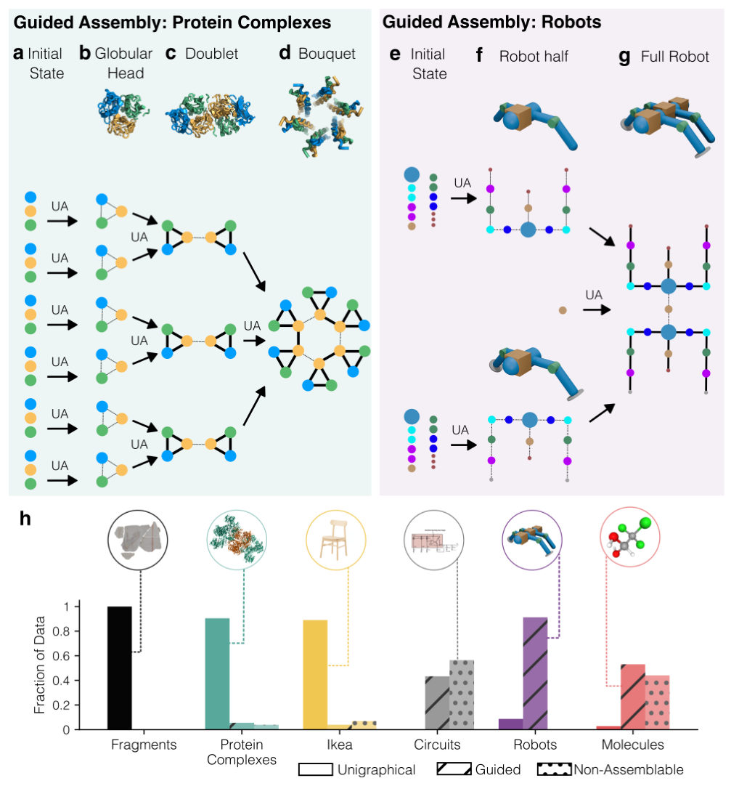
<figcaption class="paper-figure-caption"><b>Fig 3.</b> Figure 3. Network Design via Guided Assembly. a–d There is experimental evidence [40] that the protein complex C1q is constructed in three distinct steps: First, the globular head (b) is unigraphically assembled (UA) from the three proteins shown in a. Next, two globular heads are combined to form a doublet (c). Finally, three doublets are connected to form the final structure (d). e–f We use the Guided Assembly Propositions to understand how to build a robot with a fixed outcome, given that according to the UDT, its design set is compatible with two possible outcomes. We first construct the two halves of the robot through unigraphical assembly (e–f). Next we connect the two halves to form...</figcaption>
</figure>
<figure class="paper-figure-card">
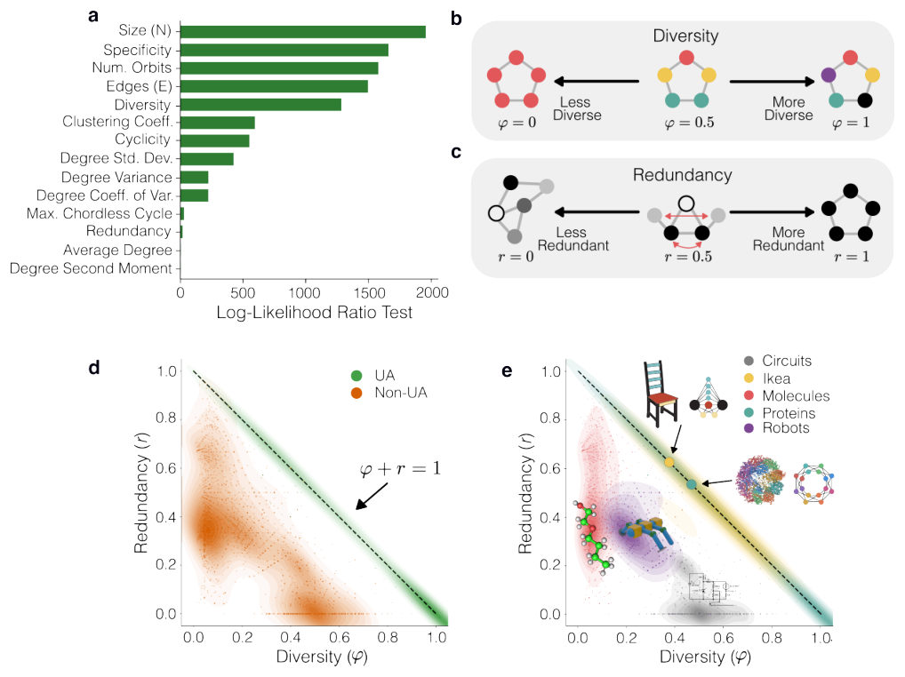
<figcaption class="paper-figure-caption"><b>Fig 4.</b> Figure 4. The Diversity-Redundancy Boundary a Logistic regression predicts the impact of 15 network characteristics on unigraphical assembly. b Diversity measures the number of distinct node types in the network, denoted by color: φ = 0 if all nodes are the same type and φ = 1 if all nodes are different colors. We also show an intermediate level of diversity φ = 0.5, where some node types are repeated. c Redundancy measures how structurally interchangeable nodes are, where two nodes are interchangeable if they play the same topological role in the network. Interchangeable nodes are denoted by shading. For r = 0 no nodes are interchangeable, for r = 0.5 two pairs of nodes can be interchanged...</figcaption>
</figure>
<figure class="paper-figure-card">
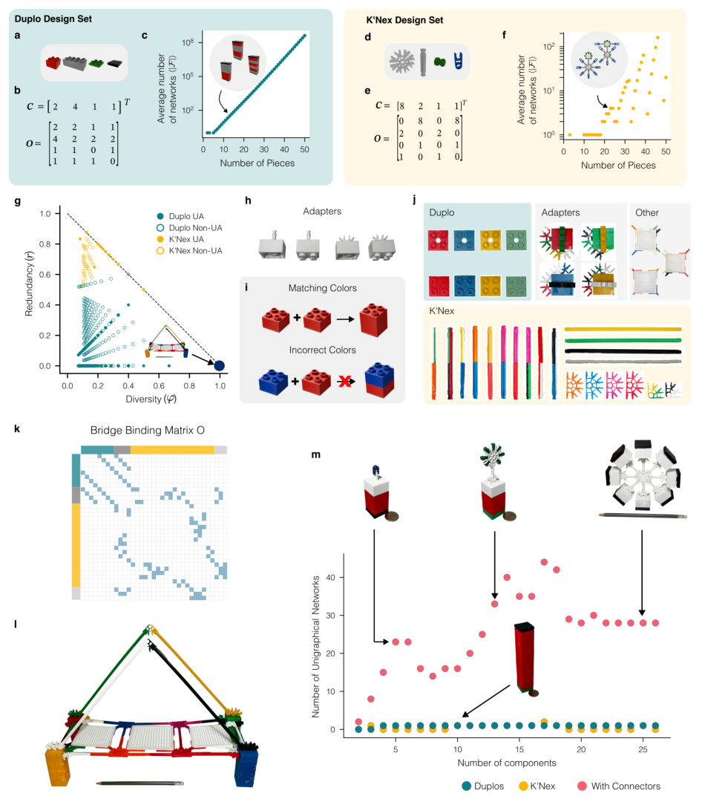
<figcaption class="paper-figure-caption"><b>Fig 5.</b> Figure 5. Designing Unigraphical Networks a–f For Duplo and K’Nex, two well-known construction sets, we extract the associated design set shown in b and e. c,f With an increasing number of pieces, both construction sets can build an ex- ponentially growing number of possible structures. g The diversity-redundancy plot indicates that both Duplo and K’Nex constructions fall well below the diversity-redundancy boundary, explaining why they are unable to undergo unigraphical assembly. h–l By combining both toy sets using adapters h, we can create networks with higher diversity j. By also enforcing that connecting nodes are of the same color as illustrated in i, we can create 35 pieces shown in...</figcaption>
</figure>
</div>

<p><strong>Summary.</strong> This paper introduces a mathematical framework called 'network design' to address the problem of ensuring that complex systems assemble into a single, unique structure. By encoding local building block constraints into a 'design set,' the authors derive the Unigraphical Design Theorem to test for this guaranteed reproducibility. This reframes system assembly as a mathematically testable property, opening a path for the rational engineering of complex structures.</p>
<p><strong>Why it may be interesting.</strong> While focused on classical network theory, the concept of encoding local, deterministic constraints to guarantee a unique global structure is highly relevant to understanding the emergent order in quantum many-body systems or the constraints governing quantum circuit design.</p>
<details>
<summary>Detailed structure</summary>
<p><strong>Main problem.</strong> Network science lacks mechanisms to consistently reproduce exact network topologies, focusing instead on generating statistical ensembles.</p>
<p><strong>Main result.</strong> The authors introduce the Unigraphical Design Theorem (UDT) to mathematically determine when a system's local constraints guarantee a unique, reproducible network assembly.</p>
<p><strong>Method.</strong> They developed a 'network design' framework encoding local constraints into a design set, extending unigraph theory to incorporate node types and pairwise binding rules.</p>
<p><strong>Model / system.</strong> The framework is applied to diverse systems, including protein complexes, molecular assemblies, electronic circuits, and robotic components, treating them as networks built from constrained building blocks.</p>
<p><strong>Key observables.</strong> Unigraphicality (whether the final topology is unique, |F|=1), Specificity ($\psi$), Diversity ($\phi$), and Redundancy ($r$).</p>
<p><strong>Important parameters / regimes.</strong> The design set components: Component Vector (N), Capacity Vector (C), and Binding Matrix (O).</p>
<p><strong>Assumptions / limitations.</strong> The initial definition of the set F deliberately disregards system-specific dynamics (like binding energies) to provide a general mathematical test.</p>
<p><strong>Figures summary.</strong> Figures illustrate the framework using protein complexes (eIF2B) to show the difference between statistical ensemble generation and unique, constraint-driven assembly, and show the application to various physical systems.</p>
<p><strong>Paper structure.</strong> The paper establishes the gap between statistical network modeling and exact reproducibility, introduces the design set and the UDT, details the concepts of unigraphical and guided assembly, applies this to thousands of real-world systems, and concludes with implications for rational engineering.</p>
</details>
<details>
<summary>Abstract</summary>
<p>From protein complexes to electronic circuits, many natural and engineered systems function only if assembled in an exact, reproducible fashion. The structure of each of these systems can be understood as a network, yet network science lacks the mechanisms to consistently reproduce exact topologies, focusing instead on generating network ensembles. We introduce the framework of network design where we encode the local constraints obeyed by a system's building blocks in a design set, and derive the Unigraphical Design Theorem, which determines when these constraints guarantee reproducible assembly into a unique structure, a process we call unigraphical assembly. For systems whose design sets do not specify a unique outcome, we identify guided assembly as a second route to reproducibility, in which temporal ordering decomposes construction into unigraphical steps. Applying these results to 3,618 reproducible systems, including protein complexes, molecules, and robots, we classify those that undergo unigraphical assembly and those that require guided assembly. We further identify a diversity-redundancy boundary that explains how systems trade component variety for structurally interchangeable parts while retaining unique assembly. Finally, we experimentally test the theory using 3D-printed components to re-engineer generative construction sets into systems that assemble unigraphically into prescribed topologies. Network design thus reframes reproducibility as a mathematically testable property of real networks, opening a route to the rational engineering of complex systems.</p>
</details>
<p><sub><a href="#top">↑ back to top</a></sub></p>

<p><a id="paper-2609.03551"></a></p>
<h3 id="enhancing-noise-robustness-in-device-independent-conference-key-agreement-with-asymmetric-parity-chsh-inequalities"><a href="http://arxiv.org/abs/2609.03551v1">Enhancing noise robustness in device-independent conference key agreement with asymmetric parity-CHSH inequalities</a></h3>
<p><strong>Authors:</strong> Makoto Ishihara, Wojciech Roga, Jonatan Bohr Brask, Masahiro Takeoka<br>
<strong>Type:</strong> theory · <strong>Category:</strong> quantum information and computing · <strong>PDF:</strong> <a href="https://arxiv.org/pdf/2609.03551v1">https://arxiv.org/pdf/2609.03551v1</a><br>
<strong>Analysis basis:</strong> full PDF text, analyzed in chunks
<strong>Topic relevance:</strong> <code>quantum measurements</code> <strong>2/5</strong></p>
<div class="figure-strip-hint">↔ Scroll figures horizontally</div>
<div class="paper-figures-scroll">
<figure class="paper-figure-card">
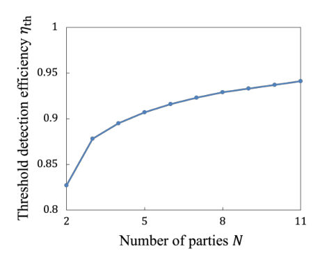
<figcaption class="paper-figure-caption"><b>Fig 1.</b> FIG. 1. Threshold detection efficiency ηth against the num- ber of parties N. We optimize the parameter of the dis- tributed GHZ state r, the measurement angles ϕ, and the probability of noisy preprocessing q to maximize key rates. We use α = 1.</figcaption>
</figure>
</div>

<p><strong>Summary.</strong> This paper introduces a novel multipartite Bell inequality, the asymmetric parity-CHSH inequality, to improve the security of device-independent conference key agreement. By deriving a tight analytical lower bound on the conditional von Neumann entropy, the authors demonstrate that this inequality, combined with noisy preprocessing, significantly enhances the protocol's resilience to experimental noise and detection inefficiencies. This advances the practical feasibility of multi-party quantum cryptography.</p>
<p><strong>Why it may be interesting.</strong> This work provides concrete, mathematically rigorous tools (entropy bounds derived from generalized Bell inequalities) to quantify and improve the security of quantum key distribution protocols, which is central to quantum information theory.</p>
<details>
<summary>Detailed structure</summary>
<p><strong>Main problem.</strong> The primary goal is to enhance the noise robustness of device-independent conference key agreement (DI-CKA) protocols.</p>
<p><strong>Main result.</strong> The combination of a new asymmetric parity-CHSH inequality and noisy preprocessing significantly improves the key rate's robustness against detection inefficiencies and various types of noise.</p>
<p><strong>Method.</strong> The authors derive a tight analytical lower bound on the conditional von Neumann entropy, which quantifies the achievable key rate, based on the violation of the generalized Bell inequality.</p>
<p><strong>Model / system.</strong> The protocol relies on an N-partite partially entangled Greenberger-Horne-Zeilinger (GHZ) state shared among multiple remote parties.</p>
<p><strong>Key observables.</strong> Conditional von Neumann entropy $H(A|E, x^*)$, the asymmetric parity-CHSH value ($S_{P	ext{-CHSH}}^\alpha$), and the resulting key rate $K$.</p>
<p><strong>Important parameters / regimes.</strong> Detection efficiency ($\eta$), global depolarizing noise ($p_G$), local depolarizing noise ($p_L$), and the asymmetry parameter ($\alpha$).</p>
<p><strong>Assumptions / limitations.</strong> The analysis assumes the parties perform specific measurements and models the imperfections using depolarizing noise channels.</p>
<p><strong>Figures summary.</strong> The figures and tables summarize the threshold values ($\eta_{th}, p_G^{th}, p_L^{th}$) required for a positive key rate, demonstrating how optimizing parameters improves robustness across different numbers of parties (N).</p>
<p><strong>Paper structure.</strong> The paper introduces the asymmetric parity-CHSH inequality, details the DI-CKA protocol, derives the entropy bound, proves its tightness, and finally analyzes the robustness against various experimental imperfections.</p>
</details>
<details>
<summary>Abstract</summary>
<p>Conference key agreement allows multiple remote parties to establish a shared secret key with information-theoretical security. In device-independent conference key agreement, security can be guaranteed with minimal assumptions on the devices used, provided that a violation of a Bell inequality is observed. However, implementations are extremely challenging because high detection efficiency is required to observe loophole-free Bell violations. Here, we enhance the robustness of device-independent conference key agreement by introducing a new family of multipartite Bell inequalities called the asymmetric parity-Clauser-Horne-Shimony-Holt (CHSH) inequalities. We derive a tight analytical lower bound on the conditional von Neumann entropy of the outcomes of one of the parties in a protocol based on this inequality, including noisy preprocessing. Using this bound, we analyze robustness to detection inefficiencies as well as local and global depolarizing noise. We show that the combination of the asymmetric parity-CHSH inequality and noisy preprocessing can significantly improve the robustness to imperfections.</p>
</details>
<p><sub><a href="#top">↑ back to top</a></sub></p>

<p><a id="paper-2609.03034"></a></p>
<h3 id="estimating-the-asymptotics-of-integer-partitions-in-intermediate-dimensions-math510math"><a href="http://arxiv.org/abs/2609.03034v1">Estimating the asymptotics of integer partitions in intermediate dimensions ($d = 3,4,5,6$)</a></h3>
<p><strong>Authors:</strong> Avinandan Mondal<br>
<strong>Type:</strong> theory · <strong>Category:</strong> statistical mechanics · <strong>PDF:</strong> <a href="https://arxiv.org/pdf/2609.03034v1">https://arxiv.org/pdf/2609.03034v1</a><br>
<strong>Analysis basis:</strong> full PDF text, analyzed in chunks
<strong>Topic relevance:</strong> <code>methods for driven-dissipative</code> <strong>2/5</strong></p>
<div class="figure-strip-hint">↔ Scroll figures horizontally</div>
<div class="paper-figures-scroll">
<figure class="paper-figure-card">
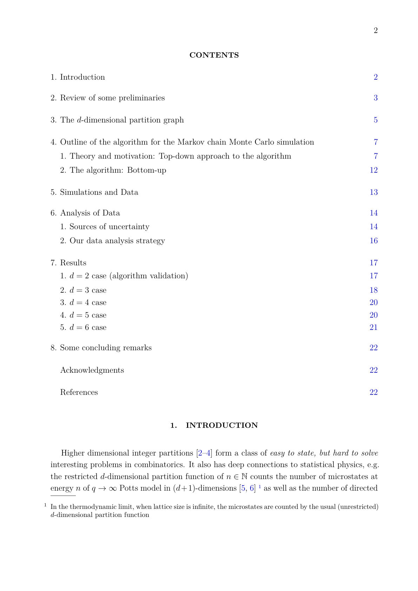
<figcaption class="paper-figure-caption"><b>Fig 1.</b> Low-resolution page preview, page 2</figcaption>
</figure>
<figure class="paper-figure-card">
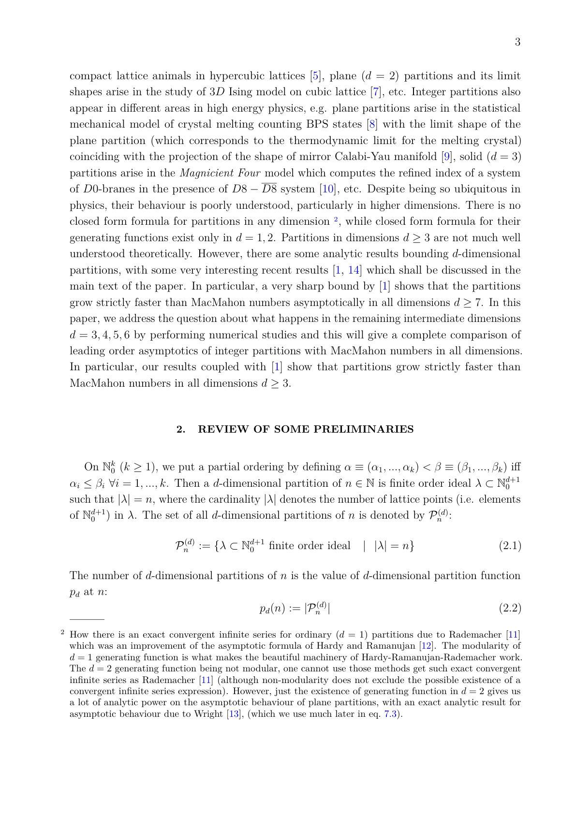
<figcaption class="paper-figure-caption"><b>Fig 2.</b> Low-resolution page preview, page 3</figcaption>
</figure>
<figure class="paper-figure-card">
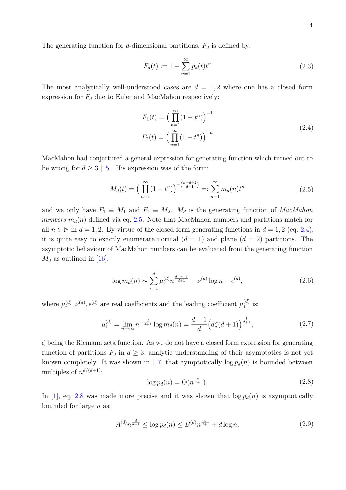
<figcaption class="paper-figure-caption"><b>Fig 3.</b> Low-resolution page preview, page 4</figcaption>
</figure>
<figure class="paper-figure-card">
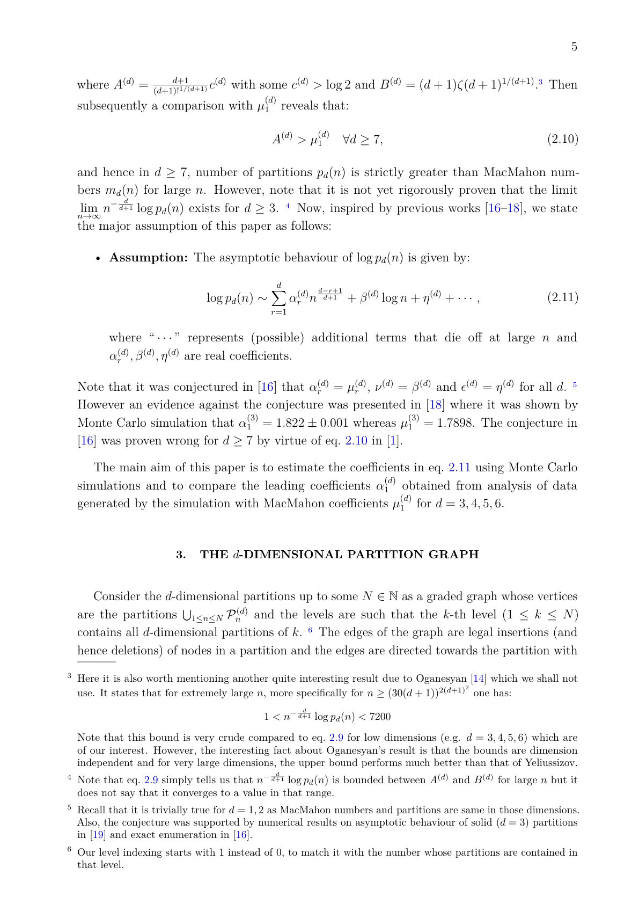
<figcaption class="paper-figure-caption"><b>Fig 4.</b> Low-resolution page preview, page 5</figcaption>
</figure>
<figure class="paper-figure-card">
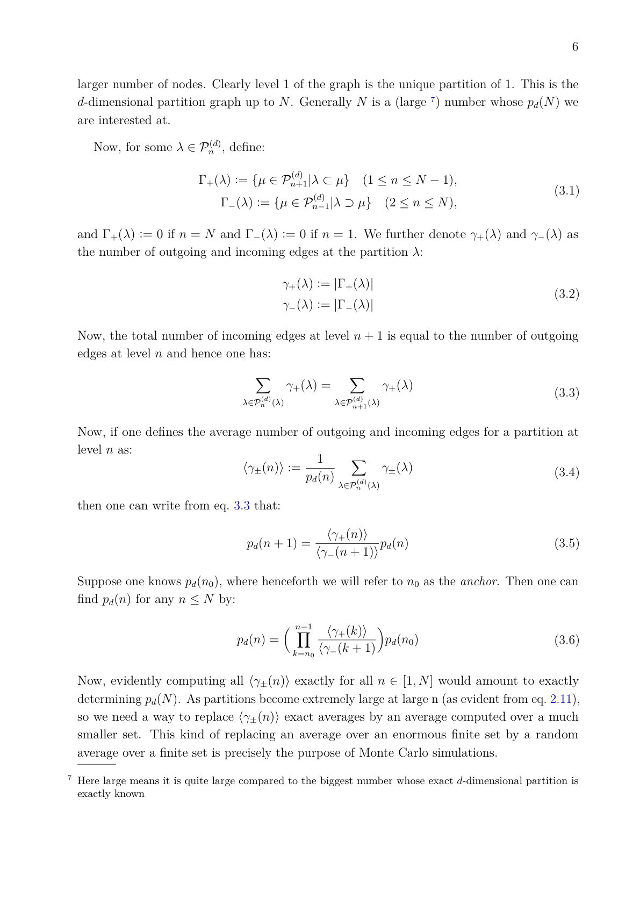
<figcaption class="paper-figure-caption"><b>Fig 5.</b> Low-resolution page preview, page 6</figcaption>
</figure>
</div>

<p><strong>Summary.</strong> This paper uses advanced MCMC simulations to determine the asymptotic growth rates of $d$-dimensional integer partitions for $d=3$ to $d=6$. The key finding is that in these intermediate dimensions, the growth rate of these partitions exceeds that of the simpler MacMahon numbers. This provides crucial quantitative data filling a gap in the understanding of partition function asymptotics in statistical physics.</p>
<p><strong>Why it may be interesting.</strong> While the topic is pure combinatorics/statistical mechanics, the use of advanced MCMC techniques (like Wang-Landau) to estimate partition function asymptotics is a sophisticated numerical method relevant to calculating partition functions in complex quantum lattice models.</p>
<details>
<summary>Detailed structure</summary>
<p><strong>Main problem.</strong> The paper aims to numerically estimate the asymptotic growth rates of the number of $d$-dimensional integer partitions, $p_d(n)$, for intermediate dimensions $d=3, 4, 5, 6$.</p>
<p><strong>Main result.</strong> The simulations establish that for $d=3$ through $d=6$, the asymptotic growth of $p_d(n)$ is strictly faster than that of the corresponding MacMahon numbers.</p>
<p><strong>Method.</strong> The authors employed Markov Chain Monte Carlo (MCMC) simulations, utilizing adaptive weight learning and the Wang-Landau algorithm to estimate the density of states and average edge counts on the partition graph.</p>
<p><strong>Model / system.</strong> The system studied is the counting of $d$-dimensional integer partitions, $p_d(n)$, which relates to the partition function of certain statistical models.</p>
<p><strong>Key observables.</strong> The primary observables are the asymptotic limits of $\log p_d(n)$ scaled by appropriate powers of $n$, such as $\lim_{n	o\infty} n^{-d/(d+1)} \log p_d(n)$.</p>
<p><strong>Important parameters / regimes.</strong> The dimensions $d=3, 4, 5, 6$ are the focus, comparing results against known MacMahon leading order coefficients.</p>
<p><strong>Assumptions / limitations.</strong> The main assumptions include the existence of the asymptotic limits and the ability to estimate the stationary distribution of the partition graph using MCMC techniques.</p>
<p><strong>Figures summary.</strong> The notes do not provide a summary of figures, but they detail the numerical results for the asymptotic limits for $d=3, 4, 5, 6$.</p>
<p><strong>Paper structure.</strong> The paper progresses from establishing the physical context and the open question (comparison to MacMahon numbers) to detailing the advanced MCMC methodology (WL algorithm, graph traversal) and finally presenting the numerical fitting and comparison of the derived asymptotic coefficients.</p>
</details>
<details>
<summary>Abstract</summary>
<p>It was recently shown by Yeliussizov \cite{Yeliussizov} that integer partitions in dimensions $d \geq 7$ asymptotically grow strictly faster than MacMahon numbers. As MacMahon numbers match with integer partitions in dimensions $d = 1,2$, the comparison of asymptotics of integer partitions with MacMahon numbers in intermediate dimensions ($d = 3,4,5,6$) is an open question. In this work, we perform Markov chain Monte Carlo (MCMC) simulations till $N=15000$ by using adaptive weight learning followed by conventional MCMC steps to numerically estimate the asymptotics of integer partitions in these intermediate dimensions. We numerically establish that in these intermediate dimensions, partitions asymptotically grow faster than MacMahon numbers. More specifically, assuming that the limits exist, we show: $\lim_{n\to\infty}n^{-3/4}\log p_3(n) = 1.8196 \pm 0.0019$, $\lim_{n\to\infty}n^{-4/5}\log p_4(n) = 1.7215 \pm 0.0045$, $\lim_{n\to\infty}n^{-5/6}\log p_5(n) = 1.6521 \pm 0.0059$, and $\lim_{n\to\infty}\log n^{-6/7}p_6(n) = 1.652 \pm 0.021$ for partitions in dimensions $d=3,4,5,$ and $6$ respectively. These numbers are all larger than MacMahon leading order asymptotic coefficients of $1.7898, 1.6614, 1.5737,$ and $1.509$ respectively. Additionally, we also find estimates for some of the sub-leading asymptotic terms in $\log p_d(n)$ in each of the dimensions.</p>
</details>
<p><sub><a href="#top">↑ back to top</a></sub></p>

<p><a id="paper-2609.03766"></a></p>
<h3 id="ground-state-phase-diagram-higher-winding-topology-and-lifshitz-criticality-in-an-anisotropic-four-spin-xx-chain"><a href="http://arxiv.org/abs/2609.03766v1">Ground-State Phase Diagram, Higher-Winding Topology, and Lifshitz Criticality in an Anisotropic Four-Spin XX Chain</a></h3>
<p><strong>Authors:</strong> Mohammad Abbasi, Faraz Valeh, Saeed Mahdavifar<br>
<strong>Type:</strong> theory · <strong>Category:</strong> strongly correlated electrons · <strong>PDF:</strong> <a href="https://arxiv.org/pdf/2609.03766v1">https://arxiv.org/pdf/2609.03766v1</a><br>
<strong>Analysis basis:</strong> full PDF text, analyzed in chunks
<strong>Topic relevance:</strong> <code>analog quantum simulation</code> <strong>2/5</strong></p>
<div class="figure-strip-hint">↔ Scroll figures horizontally</div>
<div class="paper-figures-scroll">
<figure class="paper-figure-card">
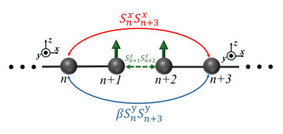
<figcaption class="paper-figure-caption"><b>Fig 1.</b> FIG. 1: Schematic representation of the four-spin cluster interac- tion Hamiltonian.</figcaption>
</figure>
<figure class="paper-figure-card">
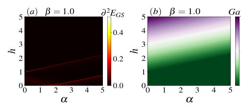
<figcaption class="paper-figure-caption"><b>Fig 2.</b> FIG. 2: (a) Density plots of the second derivative of the ground- state energy in the (α,h) plane and (b) density plots of the energy gap in the (α,h) plane for general anisotropic regime β = 1.0.</figcaption>
</figure>
<figure class="paper-figure-card">

<figcaption class="paper-figure-caption"><b>Fig 3.</b> FIG. 3: (color online).(a,b) Density plots of the second derivative of the ground-state energy in the (β,h) plane and (c,d) density plots of the energy gap in the (β,h) plane for α = 2.0 and α = 3.0, respec- tively.</figcaption>
</figure>
<figure class="paper-figure-card">
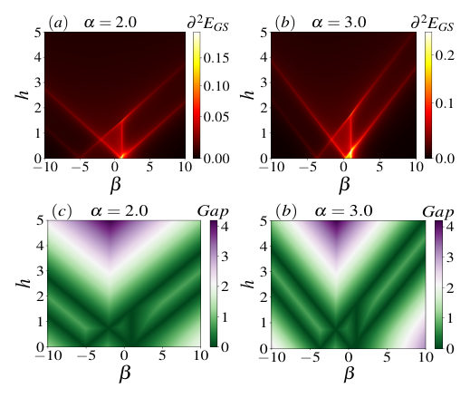
<figcaption class="paper-figure-caption"><b>Fig 4.</b> Figure 3 summarizes the behavior of the ground-state en- ergy and energy gap for two representative values of the cluster-interaction strength, α = 2.0 and α = 3.0. Figures 3(a) and 3(b) show the density plots of the second derivative of the ground-state energy, ∂2EG, in the (β,h) plane, while Figs. 2(c) and 2(d) display the corresponding energy-gap distributions. In all panels, the horizontal axis denotes the anisotropy parameter β and the vertical axis the transverse magnetic field h. The second-derivative plots in Figs. 3(a) and 3(b) exhibit pronounced nonanalytic features along well-defined lines in parameter space. These singular structures provide a di- rect signature of the critical...</figcaption>
</figure>
<figure class="paper-figure-card">
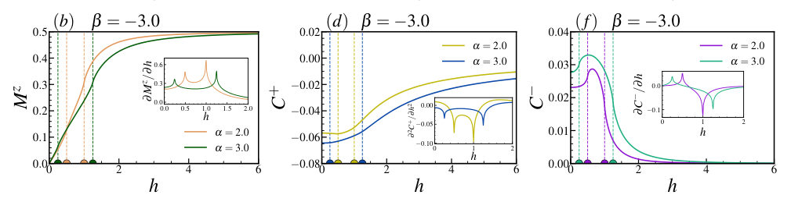
<figcaption class="paper-figure-caption"><b>Fig 5.</b> FIG. 4: Magnetization in panels (a) and (b), nematic order parameters in panels (c) and (d), and chiral order parameters in panels (e) and (f) as functions of the magnetic field h. The upper panels correspond to β = −8.0, while the lower panels are obtained for β = −3.0. All results are calculated for a chain of size N = 1000.</figcaption>
</figure>
</div>

<p><strong>Summary.</strong> This work explores the complex quantum phase diagram of a spin chain modified by anisotropic four-spin interactions. By mapping the system to fermions, the authors identify multiple topologically distinct gapped phases, including higher-winding sectors up to $|
u|=3$. This demonstrates that extended interactions offer a powerful mechanism to realize and study complex topological matter in one-dimensional quantum systems.</p>
<p><strong>Why it may be interesting.</strong> The ability to engineer higher-winding topological phases using controllable, anisotropic multispin interactions provides a versatile theoretical platform for understanding exotic quantum states beyond standard short-range models.</p>
<details>
<summary>Detailed structure</summary>
<p><strong>Main problem.</strong> The study investigates the quantum critical and topological properties of a spin-1/2 XX chain incorporating anisotropic four-spin cluster interactions under a transverse magnetic field.</p>
<p><strong>Main result.</strong> The model exhibits a rich phase diagram featuring multiple gapped topological phases characterized by quantized winding numbers up to $|
u|=3$, which are stabilized by the extended cluster interactions.</p>
<p><strong>Method.</strong> The analysis employs fermionization techniques, mapping the spin Hamiltonian to a quadratic fermionic form solvable via Bogoliubov transformations in momentum space.</p>
<p><strong>Model / system.</strong> The system is a spin-1/2 XX chain with nearest-neighbor XX interactions ($H_{XX}$) augmented by anisotropic four-spin cluster interactions ($H_{CI}$) and subjected to a transverse magnetic field ($h$).</p>
<p><strong>Key observables.</strong> Quantized winding numbers ($
u$), the bulk entanglement spectrum degeneracy pattern, and the ground-state energy density ($E_G$).</p>
<p><strong>Important parameters / regimes.</strong> Exchange anisotropy ($J$), transverse field ($h$), and cluster interaction strengths ($\alpha, eta$).</p>
<p><strong>Assumptions / limitations.</strong> The analysis relies on mapping the spin system to spinless fermions and analyzing the resulting single-particle energy spectrum $\varepsilon(k)$.</p>
<p><strong>Figures summary.</strong> Figures schematically represent the four-spin cluster interaction Hamiltonian and show the topological phase diagram using winding numbers in the $(eta, h)$ plane, alongside the bulk entanglement spectrum for different winding numbers.</p>
<p><strong>Paper structure.</strong> The paper proceeds by introducing the model Hamiltonian, detailing the fermionization and diagonalization methods, and then analyzing the resulting phase diagram, topological transitions, and critical points.</p>
</details>
<details>
<summary>Abstract</summary>
<p>We investigate the quantum critical and topological properties of a spin-$1/2$ XX chain with anisotropic four-spin cluster interactions in a transverse magnetic field. The interplay of exchange anisotropy, cluster interactions, and the external field produces a rich phase diagram with multiple gapped topological phases and distinct quantum critical boundaries. We identify several Lifshitz-type transitions arising from reconstructions of the low-energy Fermi-point structure, including an unconventional multicritical point where distinct critical branches intersect and the momentum-space topology undergoes a singular reorganization. In the isotropic limit, a conventional Lifshitz transition emerges through the merging and annihilation of Fermi points, revealing distinct mechanisms of Fermi-point reconstruction within the same model. The gapped phases are characterized by quantized winding numbers $ν=0,\pm1,-2,$ and $\pm3$, with the higher-winding phases induced by the extended cluster interactions. The $ν=\pm3$ phases exhibit a richer topological structure than conventional short-range Kitaev-type chains and are separated from other sectors by field- and interaction-driven gap closings. These topological distinctions are further reflected in characteristic degeneracy patterns of the lowest levels of the bulk entanglement spectrum. Our results demonstrate that anisotropic multispin interactions provide a versatile route to realizing higher-winding topological phases and unconventional multicriticality in one-dimensional quantum systems.</p>
</details>
<p><sub><a href="#top">↑ back to top</a></sub></p>

<p><a id="paper-2609.03023"></a></p>
<h3 id="holographic-zeros-and-poles-from-apparent-singularities"><a href="http://arxiv.org/abs/2609.03023v1">Holographic zeros and poles from apparent singularities</a></h3>
<p><strong>Authors:</strong> Edwan Préau<br>
<strong>Type:</strong> theory · <strong>Category:</strong> strongly correlated electrons · <strong>PDF:</strong> <a href="https://arxiv.org/pdf/2609.03023v1">https://arxiv.org/pdf/2609.03023v1</a><br>
<strong>Analysis basis:</strong> full PDF text, analyzed in chunks
<strong>Topic relevance:</strong> <code>Keldysh / 2PI / non-Gaussian methods</code> <strong>2/5</strong></p>
<div class="figure-strip-hint">↔ Scroll figures horizontally</div>
<div class="paper-figures-scroll">
<figure class="paper-figure-card">
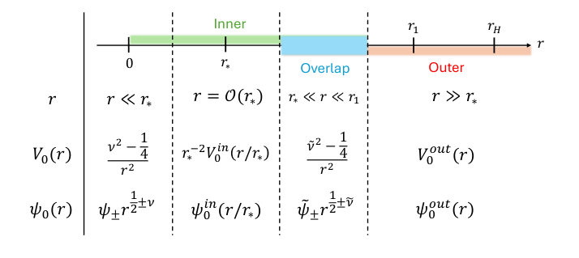
<figcaption class="paper-figure-caption"><b>Fig 1.</b> Figure 1: Schematic representation of the inner and outer region for r ∈R+, together with their overlap region. The positions of the relevant singularities are indicated: the boundary r = 0 and the apparent singularity r∗lie in the inner region, whereas the outer region contains all singularities that do not approach the origin as r∗→0, including the horizon rH. We called r1 the smallest of these outer singularities, which sets the upper bound of the inner region. Below the figure, the table indicates the regimes in r corresponding to each region, together with the associated expressions for the Schr¨odinger potential and solution ψ at leading order in r∗. The expressions for V in 0 and ψin...</figcaption>
</figure>
</div>

<p><strong>Summary.</strong> This work analyzes holographic fluctuation equations containing apparent singularities to determine the resulting spectral properties. By studying the near-boundary behavior, the authors show that the singularity's merging with the boundary dictates whether the spectral function acquires a zero or a pole. This provides a general, powerful tool for calculating transport coefficients in strongly coupled quantum matter systems.</p>
<p><strong>Why it may be interesting.</strong> The connection between bulk singularities (apparent singularities) and the spectral properties (zeros/poles) of boundary correlators is a powerful tool for understanding transport and response functions in strongly interacting quantum systems modeled by holography.</p>
<details>
<summary>Detailed structure</summary>
<p><strong>Main problem.</strong> The paper investigates how the merging of an apparent singularity with the boundary affects the spectral functions derived from holographic fluctuation equations.</p>
<p><strong>Main result.</strong> The merging of the singularity can generate either a zero or a pole in the corresponding spectral function, and the holographic product formula remains applicable.</p>
<p><strong>Method.</strong> The analysis uses near-boundary matching techniques on second-order linear differential equations (fluctuation equations) derived from holographic setups.</p>
<p><strong>Model / system.</strong> The model is a holographic setup, relating bulk fluctuations in backgrounds like AdS black branes to boundary two-point functions ($
ho$). The governing equations are reduced to Schrödinger-like forms with potentials that can exhibit apparent singularities.</p>
<p><strong>Key observables.</strong> Spectral function $
ho(\omega)$ and the two-point correlator $G_{12}(\omega, k_i)$.</p>
<p><strong>Important parameters / regimes.</strong> The approach depends on classifying equations into $(−)$ and $(+)$ classes, and analyzing the limit where an apparent singularity approaches the boundary ($r^* 	o 0$).</p>
<p><strong>Assumptions / limitations.</strong> The analysis assumes the apparent nature of the singularity and relies on matching solutions between inner (near-boundary) and outer regions.</p>
<p><strong>Paper structure.</strong> The paper establishes the general holographic setting for spectral functions, details the near-boundary analysis using inner/outer matching, deduces general properties for zeros based on the singularity merging, and concludes with applications.</p>
</details>
<details>
<summary>Abstract</summary>
<p>We study general holographic fluctuation equations with apparent singularities, and the associated spectral functions. We consider the regime where an apparent singularity approaches the boundary, for which the near-boundary behavior of solutions can be determined via an inner/outer matching type of calculation. Depending on properties of the equation, we find that the merging of an apparent singularity with the boundary may generate either a zero or a pole for the corresponding spectral function. Our results also indicate that the recently introduced holographic product formula still applies in the presence of apparent singularities.</p>
</details>
<p><sub><a href="#top">↑ back to top</a></sub></p>

<p><a id="paper-2609.03111"></a></p>
<h3 id="large-deviations-for-linear-regressions"><a href="http://arxiv.org/abs/2609.03111v1">Large deviations for linear regressions</a></h3>
<p><strong>Authors:</strong> Silvia Bartolucci, Fabio Caccioli, Francesco Caravelli, Pierpaolo Vivo<br>
<strong>Type:</strong> theory · <strong>Category:</strong> statistical mechanics · <strong>PDF:</strong> <a href="https://arxiv.org/pdf/2609.03111v1">https://arxiv.org/pdf/2609.03111v1</a><br>
<strong>Analysis basis:</strong> full PDF text, analyzed in chunks
<strong>Topic relevance:</strong> <code>Keldysh / 2PI / non-Gaussian methods</code> <strong>2/5</strong></p>
<div class="figure-strip-hint">↔ Scroll figures horizontally</div>
<div class="paper-figures-scroll">
<figure class="paper-figure-card">
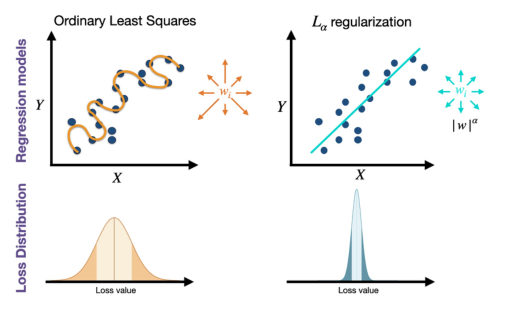
<figcaption class="paper-figure-caption"><b>Fig 1.</b> FIG. 1. Schematic representation of regression models in proximity of the interpolation threshold with and without Lα regularization, associated weights wi’s and distribution of the training loss.</figcaption>
</figure>
<figure class="paper-figure-card">
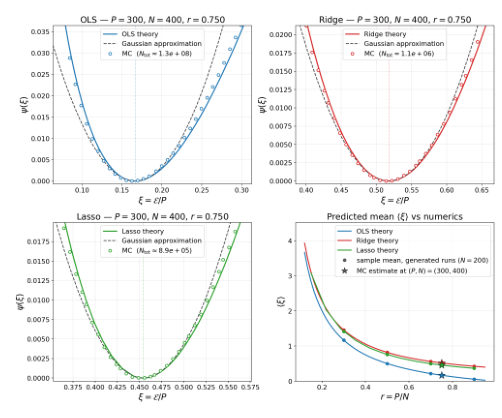
<figcaption class="paper-figure-caption"><b>Fig 2.</b> FIG. 2. Distribution and mean of the minimal training loss for OLS, Ridge, and Lasso at P = 300, N = 400 (r = P/N = 0.750), with p(β) = δ(β −1). Top left, top right, and bottom left: large-deviation rate function ψ(ξ) of the intensive loss ξ = E/P for OLS, Ridge (λ = 0.5), and Lasso (λ = 0.5), respectively. Solid lines: exact replica predic- tion (Eq. (11)); dashed lines: Gaussian approximation about the typical value; open circles: rate function estimated from Ntot = 1.1 × 109 (OLS), 1.1 × 106 (Ridge), and 8.9 × 105</figcaption>
</figure>
</div>

<p><strong>Summary.</strong> This theoretical work calculates the large-deviation statistics for the minimum training loss in high-dimensional linear regression. Using advanced statistical physics tools like the replica method, the authors derive the rate function that governs rare fluctuations in the optimal loss. The results confirm the theoretical framework's consistency across different regularization methods (Ridge, Lasso) and regimes.</p>
<p><strong>Why it may be interesting.</strong> While the core topic is machine learning statistics, the mathematical machinery—replica calculations, large deviation theory, and the use of order parameters—is highly relevant to disordered systems and statistical physics problems in condensed matter.</p>
<details>
<summary>Detailed structure</summary>
<p><strong>Main problem.</strong> The paper computes the large-deviation statistics of the minimum training loss in linear regression, characterizing rare sample-to-sample fluctuations beyond the typical Gaussian regime.</p>
<p><strong>Main result.</strong> The rate function governing the large deviation probability $P(E = P\xi) \approx e^{-P \psi(\xi)}$ is derived for various regularizers, showing consistency between replica methods and direct calculations.</p>
<p><strong>Method.</strong> The zero-temperature replica method is employed to calculate the scaled cumulant generating function $\Phi(s)$, from which the rate function $\psi(\xi)$ is obtained via a Legendre transform.</p>
<p><strong>Model / system.</strong> The model is standard linear regression with $N$ observations and $P$ predictors, using Gaussian design and noise. The loss function incorporates general separable regularizers like Ridge ($\ell_2$) and Lasso ($\ell_1$).</p>
<p><strong>Key observables.</strong> The minimum regularized training loss $E$, the intensive loss $\xi = E/P$, and the rate function $\psi(\xi)$.</p>
<p><strong>Important parameters / regimes.</strong> The ratio $r = P/N$ (predictors to observations), the regularization strength $\lambda$, and the signal distribution $p(eta)$.</p>
<p><strong>Assumptions / limitations.</strong> The analysis assumes Gaussian design and noise, and for some derivations, the light-tailedness of the teacher prior $p(eta)$ is required.</p>
<p><strong>Figures summary.</strong> Figures illustrate the rate function $\psi(\xi)$ and the predicted mean loss for OLS, Ridge, and Lasso, comparing theoretical predictions against numerical simulations across different ratios $r$.</p>
<p><strong>Paper structure.</strong> The paper develops the theory by first establishing the general framework using the replica method to find $\Phi(s)$. It then applies this to OLS, Ridge, and Lasso, deriving the rate function $\psi(\xi)$ for each case, and finally confirming consistency across different theoretical approaches and limits (e.g., $\lambda 	o 0$).</p>
</details>
<details>
<summary>Abstract</summary>
<p>Linear regression is one of the simplest and most widely used tools to learn patterns from data: it fits a set of coefficients so that a linear combination of predictors best matches observed responses. The quality of the fit is measured by the residual sum of squares, the total squared mismatch between predictions and data, whose minimum defines the training loss. We consider Gaussian design and noise, with teacher coefficients independently drawn from a general distribution $p(β)$, and a general class of separable regularizers, including Ridge and Lasso. Using the zero-temperature replica method, we compute analytically the large-deviation statistics of the minimum training loss for large numbers $P$ of predictors and $N$ of observations, with $r=P/N$ fixed. The rate function we compute governs rare sample-to-sample fluctuations of the optimal loss. Extensive numerical simulations are in excellent agreement with our theory and clearly show a pronounced deviation from the Gaussian regime of typical fluctuations in the tails.</p>
</details>
<p><sub><a href="#top">↑ back to top</a></sub></p>

<p><a id="paper-2609.04149"></a></p>
<h3 id="non-uniform-quantum-geometry-stabilizes-generalized-wigner-crystals"><a href="http://arxiv.org/abs/2609.04149v1">Non-uniform quantum geometry stabilizes generalized Wigner crystals</a></h3>
<p><strong>Authors:</strong> Nicolás Morales-Durán, Tobias M. R. Wolf, Jingtian Shi, Tomohiro Soejima, Andrew J. Millis, Jennifer Cano<br>
<strong>Type:</strong> theory · <strong>Category:</strong> strongly correlated electrons · <strong>PDF:</strong> <a href="https://arxiv.org/pdf/2609.04149v1">https://arxiv.org/pdf/2609.04149v1</a><br>
<strong>Analysis basis:</strong> full PDF text, analyzed in chunks
<strong>Topic relevance:</strong> <code>analog quantum simulation</code> <strong>2/5</strong></p>
<div class="figure-strip-hint">↔ Scroll figures horizontally</div>
<div class="paper-figures-scroll">
<figure class="paper-figure-card">
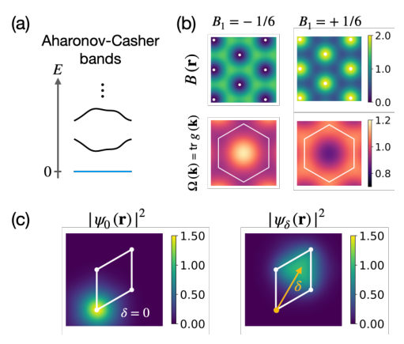
<figcaption class="paper-figure-caption"><b>Fig 1.</b> FIG. 1. (a) Schematic representation of the bands resulting from diagonalizing the Hamiltonian given by Eq. (1). In this work we focus on the lowest band (indicated in blue), which we refer to as the AC band. This band is flat and has ideal quantum geometry. (b) Examples of magnetic field distribu- tions generating the AC bands and their corresponding Berry curvature, Ωk, with negative (left column) and positive (right column) harmonic B1. Because the AC band is ideal, it sat- isfies Ωk = tr gk, where gk is the quantum metric. (c) Charge densities of two localized orbitals centered at different posi- tions δ within the moir´e unit cell. We have used B1 = −1/6.</figcaption>
</figure>
<figure class="paper-figure-card">
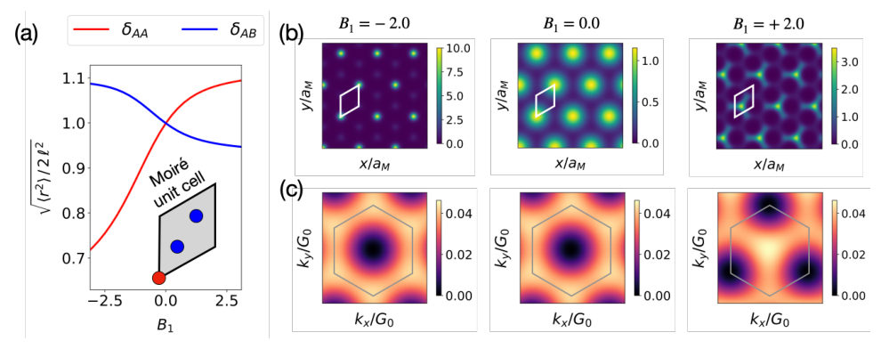
<figcaption class="paper-figure-caption"><b>Fig 2.</b> FIG. 2. (a) Spread of most localized AC orbitals centered at high-symmetry points within the moir´e unit cell, as a function of B1. The high-symmetry points, labeled δAA (red) and δAB/δBA (blue) are indicated in the inset. (b) Charge density of the crystal state at filling ν = 1/3 for different values of B1. The moir´e unit cell is indicated. (c) Brillouin zone occupation |c(k)|2 for an orbital from each crystal in (b). For B1 = +2 there is an equivalent crystal with orbitals centered at δBA, whose momentum distribution is peaked at the other three corners of the Brillouin zone, G0 = 4π/ √</figcaption>
</figure>
<figure class="paper-figure-card">
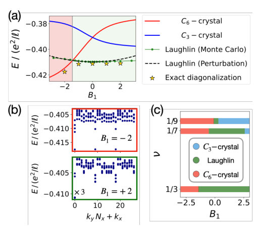
<figcaption class="paper-figure-caption"><b>Fig 3.</b> FIG. 3. (a) Energy per particle of crystal and liquid states at filling ν = 1/3 of AC bands, as a function of B1. The golden stars indicate exact diagonalization energies for a system with N = 9 particles. (b) Exact diagonalization spectra for two AC bands: For B1 = −2 the ground state breaks the discrete translation symmetry of the magnetic field, forming a gener- alized Wigner crystal with √</figcaption>
</figure>
<figure class="paper-figure-card">
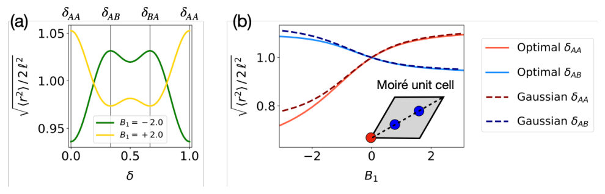
<figcaption class="paper-figure-caption"><b>Fig 4.</b> FIG. 4. (a) Spread of the optimal orbitals, obtained from diagonalizing Eq. (13) in the main text, along a line-cut across the moir´e unit cell, for two values of B1. The minimal spread is reached at δAA for B1 &lt; 0 and at δAB/δBA for B1 &gt; 0. (b) Comparison between the spread of the analytic orbitals given by Eq. (D2) (dashed lines) and the optimal orbitals used in the main text (solid lines), as a function of B1. The analytic orbitals reproduce the spread of the optimal orbitals very well for B1 ≥1. Below this threshold, the optimal orbitals become more localized by acquiring higher angular momentum terms consistent with the C6-symmetry of the δAA centers. The inset indicates the...</figcaption>
</figure>
<figure class="paper-figure-card">
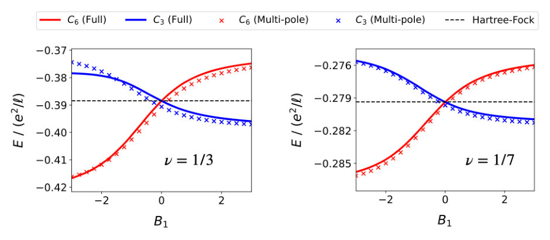
<figcaption class="paper-figure-caption"><b>Fig 5.</b> FIG. 5. Energy of generalized Wigner crystal states on AC bands constructed from the orbitals defined in Eq. (D2) at fillings (a) ν = 1/3 and (b) ν = 1/7. Results for the C6-crystal are shown in red and results for the C3-crystal are shown in blue. Solid lines correspond to the full crystal energy, Eq. (D16), while the crosses correspond to the multipole expansion Eq. (D18). The black dashed lines are the Hartree-Fock energies for B1 = 0.</figcaption>
</figure>
</div>

<p><strong>Summary.</strong> This theoretical work investigates the competition between electron crystal (Wigner) and liquid (Laughlin) states in moiré materials characterized by non-uniform quantum geometry. By comparing the energies of both phases, the authors demonstrate that geometric non-uniformity drives the system towards crystallization. The stability boundary is governed by a quantum analogue of the Lindemann criterion related to the crystal's zero-point fluctuations.</p>
<p><strong>Why it may be interesting.</strong> The identification of quantum geometry-controlled zero-point fluctuations as the stability determinant provides a novel, purely quantum-geometric mechanism for phase transitions in strongly correlated electron systems, which is highly relevant to understanding moiré heterostructures.</p>
<details>
<summary>Detailed structure</summary>
<p><strong>Main problem.</strong> The paper addresses the open question of the mechanism selecting between competing correlated states—Fractional Chern Insulator (FCI) states and generalized Wigner crystals—in systems subjected to non-uniform quantum geometry.</p>
<p><strong>Main result.</strong> The study finds that strong non-uniform quantum geometry favors electron crystallization, establishing a quantum analogue of the Lindemann criterion where the crystal's zero-point fluctuations control the phase boundary.</p>
<p><strong>Method.</strong> The authors compare the calculated energies of the Wigner crystal state and the Laughlin liquid state by minimizing the orbital spread and using perturbative expansions and Monte Carlo simulations.</p>
<p><strong>Model / system.</strong> The system is modeled using Aharonov-Casher (AC) bands, which approximate the topmost band in Moiré materials hosting Chern bands. The Hamiltonian incorporates a spatially varying magnetic field, $B(r) = B_0 + \delta B(r)$.</p>
<p><strong>Key observables.</strong> Crystalline energy ($E_{AC}^C$), Laughlin state energy ($E_{AC}^L$), and the orbital spread ($\langle r^2 
angle_c$).</p>
<p><strong>Important parameters / regimes.</strong> Filling fraction $
u = 1/m$ and the degree of geometric non-uniformity, parameterized by $B_1$.</p>
<p><strong>Assumptions / limitations.</strong> The analysis relies on variational ansatz wave functions and approximations such as neglecting terms involving three or more crystal sites in the energy calculation.</p>
<p><strong>Figures summary.</strong> Figures illustrate the flat AC band and localized orbitals depending on the sign of $B_1$. They also show phase diagrams comparing crystalline and liquid energies across varying $B_1$ values for different fillings.</p>
<p><strong>Paper structure.</strong> The paper progresses by establishing the AC band model, calculating the energies for both the Laughlin and Wigner crystal states using various approximations (perturbative, variational), and finally mapping out the phase diagram based on the competition between these two energy functionals.</p>
</details>
<details>
<summary>Abstract</summary>
<p>Moiré materials host fractional Chern insulators and electron crystals in close proximity, but the mechanism selecting between them remains an open question. We address this competition in Chern bands with ideal but momentum-dependent quantum geometry -- Aharonov-Casher bands. We present an ansatz wave function for generalized Wigner crystals and, by comparing its energy to that of the competing Laughlin-like state, map out the phase diagram at filling fraction $ν=1/m$ as a function of the degree of geometric non-uniformity. Our work identifies quantum geometry-controlled zero point fluctuations of the charge density of the generalized Wigner crystal as the mechanism controlling its relative stability, implying a kind of quantum Lindemann criterion for the crystal-liquid phase boundary.</p>
</details>
<p><sub><a href="#top">↑ back to top</a></sub></p>

<p><a id="paper-2609.03473"></a></p>
<h3 id="granular-rods-fall-faster-in-denser-obstacle-fields"><a href="http://arxiv.org/abs/2609.03473v1">Granular Rods Fall Faster in Denser Obstacle Fields</a></h3>
<p><strong>Authors:</strong> Fumiaki Nakai, Hiroaki Katsuragi<br>
<strong>Type:</strong> theory · <strong>Category:</strong> statistical mechanics · <strong>PDF:</strong> <a href="https://arxiv.org/pdf/2609.03473v1">https://arxiv.org/pdf/2609.03473v1</a><br>
<strong>Analysis basis:</strong> full PDF text, analyzed in chunks
<strong>Topic relevance:</strong> <code>Frenkel-Kontorova</code> <strong>1/5</strong> · <code>correlated / nonlocal dissipation</code> <strong>1/5</strong> · <code>driven-dissipative phase transition</code> <strong>1/5</strong> · <code>methods for driven-dissipative</code> <strong>1/5</strong> · <code>non-equilibrium universality</code> <strong>1/5</strong></p>
<div class="figure-strip-hint">↔ Scroll figures horizontally</div>
<div class="paper-figures-scroll">
<figure class="paper-figure-card">

<figcaption class="paper-figure-caption"><b>Fig 1.</b> FIG. 2. Representative dynamics for l/d = 30 [(a),(c)] and l/d = 300 [(b),(d)]. (a),(b) Dimensionless center-of-mass tra- jectories (x/d, y/d) over 0 ≤t p</figcaption>
</figure>
<figure class="paper-figure-card">

<figcaption class="paper-figure-caption"><b>Fig 2.</b> FIG. 3. Mean descent speed before trapping. We evaluate −⟨¯vy⟩at the latest time t p</figcaption>
</figure>
<figure class="paper-figure-card">

<figcaption class="paper-figure-caption"><b>Fig 3.</b> FIG. 4. Dimensionless rotational relaxation time. We define τrot as the first lag at which ⟨cos{2[θ(t0 + t) −θ(t0)]}⟩reaches e−1. At each lag, the correlation is averaged only over the rods that remain untrapped among the 32 independent real- izations. Conditions that do not reach the threshold within the available dimensionless lag window (t p</figcaption>
</figure>
<figure class="paper-figure-card">

<figcaption class="paper-figure-caption"><b>Fig 4.</b> FIG. 5. Distance to trapping. We set y = 0 initially, so that −y is the downward fall distance. (a) Survival probabil- ity P(−ytrap &gt; −y). Colors denote l/d, and symbols denote ρl2. The inset shows the curves against −y/d; plotting them against −yρ3l2d3 approximately collapses the different rod lengths and obstacle densities. (b) The mean fall distance to trapping −⟨ytrap⟩is obtained from an exponential fit to each survival curve. The scaled mean distance −⟨ytrap⟩l2/d3</figcaption>
</figure>
<figure class="paper-figure-card">

<figcaption class="paper-figure-caption"><b>Fig 5.</b> FIG. 6. Effect of contact friction on the mean pretrapping fall speed. Results are shown for (a) µ = 0.1, (b) µ = 0.3, and (c) µ = 1. Colors and symbols identify l/d. The nonmonotonic response remains clear for moderate friction but is weakened at strong friction.</figcaption>
</figure>
</div>

<p><strong>Summary.</strong> This paper simulates the motion of a rod falling through randomly placed obstacles, revealing that its average speed does not simply decrease with obstacle density. Instead, the speed shows a nonmonotonic behavior—speeding up in an intermediate density regime—which is attributed to the interplay between particle anisotropy and rotational memory effects. The findings provide scaling laws describing this complex, driven transport phenomenon.</p>
<p><strong>Why it may be interesting.</strong> The study of non-equilibrium transport in anisotropic particles interacting with disordered media touches upon concepts relevant to driven many-body systems and energy dissipation in complex environments.</p>
<details>
<summary>Detailed structure</summary>
<p><strong>Main problem.</strong> The study investigates how particle shape (anisotropy) influences transport dynamics when a rod falls through a field of randomly placed obstacles under external driving.</p>
<p><strong>Main result.</strong> The mean descent speed exhibits a nonmonotonic dependence on obstacle density, showing an initial decrease, a subsequent increase, and a final decrease before trapping.</p>
<p><strong>Method.</strong> The study uses numerical simulations to solve the translational and rotational equations of motion for a dissipative rod interacting with fixed obstacles.</p>
<p><strong>Model / system.</strong> The model consists of a dissipative rod (spherocylinder) falling under gravity through a 2D random array of fixed point obstacles, governed by contact forces and dissipation.</p>
<p><strong>Key observables.</strong> Mean descent speed (mean vertical velocity), rotational relaxation time, and mean trapping distance.</p>
<p><strong>Important parameters / regimes.</strong> Obstacle density ($
ho$), rod aspect ratio ($l/d$), and the friction coefficient ($\mu$).</p>
<p><strong>Assumptions / limitations.</strong> The analysis relies on scaling arguments derived from collision rates and assumes specific physical mechanisms govern the transitions between different transport regimes.</p>
<p><strong>Figures summary.</strong> Figures illustrate the nonmonotonic variation of mean fall speed versus density for long rods, and show the dependence of rotational relaxation time on density.</p>
<p><strong>Paper structure.</strong> The paper establishes the physical model and equations of motion, presents simulations showing the nonmonotonic drift, derives scaling laws for the three density regimes (low, intermediate, high), and finally tests the robustness of the speedup by including contact friction.</p>
</details>
<details>
<summary>Abstract</summary>
<p>How particle shape affects transport through obstacle fields under external driving is a fundamental question in nonequilibrium physics. We simulate a dissipative rod falling under gravity through randomly placed fixed obstacles. As the obstacle density increases, the mean descent speed decreases, increases, and then decreases again before trapping. The rod can therefore fall faster in a denser obstacle field. Scaling arguments based on collision rates and rod geometry explain all three regimes, their crossovers, and the mean fall distance before trapping. These results reveal nonmonotonic driven transport arising from particle anisotropy.</p>
</details>
<p><sub><a href="#top">↑ back to top</a></sub></p>

<p><a id="paper-2609.04164"></a></p>
<h3 id="a-superconducting-peierls-instability"><a href="http://arxiv.org/abs/2609.04164v1">A Superconducting Peierls Instability</a></h3>
<p><strong>Authors:</strong> Pramodh Senarath Yapa, Joseph Maciejko, Frank Marsiglio, Annica M. Black-Schaffer<br>
<strong>Type:</strong> theory · <strong>Category:</strong> strongly correlated electrons · <strong>PDF:</strong> <a href="https://arxiv.org/pdf/2609.04164v1">https://arxiv.org/pdf/2609.04164v1</a><br>
<strong>Analysis basis:</strong> full PDF text, analyzed in chunks
<strong>Topic relevance:</strong> <code>Keldysh / 2PI / non-Gaussian methods</code> <strong>1/5</strong> · <code>analog quantum simulation</code> <strong>1/5</strong></p>
<div class="figure-strip-hint">↔ Scroll figures horizontally</div>
<div class="paper-figures-scroll">
<figure class="paper-figure-card">

<figcaption class="paper-figure-caption"><b>Fig 1.</b> FIG. 1: Schematics of the conventional Peierls instability (top row) and its superconducting analog (bottom row). (a1, b1) Uniform 1D lattice and its electronic band, with Fermi points at ±kF . (c1) Kohn anomaly: progressive softening of the phonon mode at the nesting wavevector q = 2kF driven by electron-phonon coupling. Colour gradient indicates increasing electron- phonon coupling. The instability occurs when ω2 ph becomes negative, i.e. the phonon frequency becomes complex-valued. (d1, e1) Resulting distorted lattice with accompanying CDW and gapped electronic spectrum. (a2, b2) Translation-invariant edge of a semi-infinite 2D superconductor and its schematic BdG spectrum, including the...</figcaption>
</figure>
<figure class="paper-figure-card">

<figcaption class="paper-figure-caption"><b>Fig 2.</b> FIG. 2: Bulk phase diagram, ribbon geometry and the uni- form (y-translation-invariant) order parameters on the rib- bon. (a) Mean-field bulk phase diagram at ne = 0.75 and T = 0 in the (U/t, V/t) plane, showing s (green), s + id (or- ange), and s + d + ip (blue) phases. Dashed vertical line corresponds to the cut examined in the SM, and 9 marks the U/t = −3, V/t = −4 point used in the main text. (b) Ribbon geometry with periodic boundary conditions along y, and open boundaries along x (blue and pink open edges). (c) Uniform order parameter profiles solved using self-consistent BdG across an Nx = 20 ribbon at 9, enforcing translation invariance along y.</figcaption>
</figure>
<figure class="paper-figure-card">

<figcaption class="paper-figure-caption"><b>Fig 3.</b> Figure 2(a) shows the bulk zero-temperature self- consistent mean-field phase diagram at filling ne = 0.75. An s + d + ip phase occupies a large region of the (U/t, V/t) plane, consistent with previous studies [40– 44]. In the bulk, the px- and py-oriented mixed states are symmetry-related and degenerate. Open boundary con- ditions (OBC) distinguish the two degenerate bulk states as fully OBC self-consistent calculations show that both orientations develop an edge PDW, with the s + d + ipx (s+d+ipy) state developing a PDW on edges normal to x (y), see SM. Thus, we can here focus on the s + d + ipx phase in a ribbon geometry with an edge normal to x, see Fig. 2(b), where the edges are marked...</figcaption>
</figure>
<figure class="paper-figure-card">

<figcaption class="paper-figure-caption"><b>Fig 4.</b> FIG. 3: ABS spectrum and gap opening in the edge PDW state. (a) BdG spectrum of the y-translation-invariant Nx = 20, Nk = 600 ribbon at U/t = −3, V/t = −4, and ne = 0.75. States are coloured according to their center-of-mass in the x direction, with blue (red) indicating localization near the left (right) edge and dark colours indicating bulk-like states, see Methods Sec. D. The ABS branches cross zero energy at ky = ±kc (red dotted vertical lines) with opposite velocities, where kc ≃1.340. Dashed curves show the analytic ABS dispersion EABS(ky) = ±A(ky) (Eq. 17). (b) Momentum- resolved BdG spectrum after translational invariance in y is relaxed and the self-consistent edge PDW shown in...</figcaption>
</figure>
<figure class="paper-figure-card">

<figcaption class="paper-figure-caption"><b>Fig 5.</b> FIG. 4: Real-space structure of the edge PDW order parameters in ribbon geometry. (a1)–(e1) ∆0, ∆s∗, ∆d, ∆px, and ∆py order parameters for an Nx = 20, Ny = 150 ribbon at U/t = −3, V/t = −4, and ne = 0.75. For clarity, the real-space panels display only 100 of the 150 lattice sites along y. Orange boxes indicate the edge regions isolated in (a2)–(e2) where the modulated component is isolated by subtracting the average of the order parameter along y at each fixed x. The plotting and phase conventions are defined in Methods Sec. B. (f) Fast Fourier transform (FFT) of the order parameters at the edge, with the dominant peaks at qy = 2kc indicated by vertical red dotted line, with inset showing...</figcaption>
</figure>
</div>

<p><strong>Summary.</strong> This work establishes a superconducting Peierls instability, drawing an analogy between the metal-insulator transition and the formation of an edge Pair-Density Wave (PDW) in superconductors. By analyzing the instability of Andreev Bound States (ABS) at the boundary of a 2D superconductor, the authors demonstrate a novel mechanism for spontaneous symmetry breaking. This mechanism is computationally verified using the extended Hubbard model and suggests a broad applicability beyond specialized topological systems.</p>
<p><strong>Why it may be interesting.</strong> The mechanism provides a general framework for understanding symmetry breaking in superconductors that does not require exotic topological features, making it relevant to many unconventional pairing theories.</p>
<details>
<summary>Detailed structure</summary>
<p><strong>Main problem.</strong> The paper investigates the superconducting analog of the Peierls instability, showing how an electronic instability at the edge of a superconductor can induce a gap-opening Pair-Density Wave (PDW).</p>
<p><strong>Main result.</strong> The instability leads to the spontaneous formation of an edge PDW, which gaps the dispersing Andreev Bound States (ABS) at the boundary, representing a novel mechanism for translation-symmetry breaking in superconductors.</p>
<p><strong>Method.</strong> The analysis uses self-consistent Bogoliubov-de Gennes (BdG) calculations and examines the instability of the edge state against pairing fluctuations.</p>
<p><strong>Model / system.</strong> The system is modeled using a square-lattice extended Hubbard model, focusing on a mixed-symmetry s+d+ip superconducting state on a ribbon geometry.</p>
<p><strong>Key observables.</strong> Superconducting Kohn anomaly (softening of a pairing mode), edge PDW gap ($\Delta_{	ext{PDW}}$), and the gapping of the ABS spectrum.</p>
<p><strong>Important parameters / regimes.</strong> The instability is driven by the zero-energy crossings of a <em>dispersing</em> ABS, which is key to its broad applicability.</p>
<p><strong>Assumptions / limitations.</strong> The analysis relies on mean-field theory and focuses on the boundary realization, which is distinct from previous flat-band or topologically protected examples.</p>
<p><strong>Figures summary.</strong> Figures schematically compare the conventional Peierls instability (CDW) with the superconducting analog (edge PDW). BdG calculations confirm the self-consistent development of the edge PDW structure.</p>
<p><strong>Paper structure.</strong> The paper first establishes the analogy to the Peierls instability, then develops the superconducting counterpart by analyzing pairing fluctuations and the superconducting Kohn anomaly. Finally, it uses BdG calculations on the extended Hubbard model to confirm the gap-opening PDW structure.</p>
</details>
<details>
<summary>Abstract</summary>
<p>The Peierls instability is a foundational mechanism in condensed matter physics, showing how the electron--phonon interaction can transform a simple metal into an insulating state with a new lattice periodicity. In a one-dimensional (1D) metal the Peierls instability follows from the enhanced electronic response at wavevector $Q=2k_F$ (connecting the Fermi points) producing a Kohn anomaly: a softening of the phonon mode at the same wavevector. Condensation of this mode then generates the tell-tale Peierls periodic lattice distortion and charge-density wave (CDW) that gaps the electronic spectrum. Here we show an analogous instability at the edge of a two-dimensional (2D) superconductor, where a dispersing Andreev bound state (ABS) hosts Bogoliubov Fermi points at $\pm k_c$. The enhanced quasiparticle response at the connecting wavevector $Q=2k_c$ couples directly to pairing-fluctuations and produces a superconducting Kohn anomaly: a softening of a pairing mode at the same wavevector. Condensation of this mode then generates an edge pair-density wave (PDW) that gaps the ABS. We refer to this as a superconducting Peierls instability and identify the boundary quasiparticle structure that enables it. As a concrete realization, we consider a square-lattice extended Hubbard model whose mixed-symmetry $s+d+ip$ state hosts a dispersing ABS with zero-energy crossings at finite edge momenta. Using self-consistent Bogoliubov--de Gennes (BdG) calculations we show that the order parameter develops an edge PDW, with the wavevector set by the superconducting Kohn anomaly, that gaps the ABS crossings. Our results identify a novel mechanism for spontaneous translation-symmetry breaking in a superconductor. As this superconducting Peierls mechanism does not require an extensive zero-energy flat band or topologically protected edge states, it may apply broadly to unconventional superconductors.</p>
</details>
<p><sub><a href="#top">↑ back to top</a></sub></p>

<p><a id="paper-2609.03138"></a></p>
<h3 id="antiferromagnetism-altered-plasmon-dynamics"><a href="http://arxiv.org/abs/2609.03138v1">Antiferromagnetism-altered plasmon dynamics</a></h3>
<p><strong>Authors:</strong> Yifan Su, Suheng Xu, Rocco A. Vitalone, Ziyu Liu, Emil Viñas Boström, Na Wu, Chun-Ying Huang, Zhuquan Zhang, Jaehoon Jung, Daniel G. Chica, Vinícius da Silveira Lan Avelar, Yiping Wang, Takashi Taniguchi, Kenji Watanabe, James C. Hone, Xiaoyang Zhu, Cory R. Dean, Xavier Roy, Angel Rubio, D. N. Basov<br>
<strong>Type:</strong> both · <strong>Category:</strong> strongly correlated electrons · <strong>PDF:</strong> <a href="https://arxiv.org/pdf/2609.03138v1">https://arxiv.org/pdf/2609.03138v1</a><br>
<strong>Analysis basis:</strong> full PDF text, analyzed in chunks
<strong>Topic relevance:</strong> <code>Keldysh / 2PI / non-Gaussian methods</code> <strong>1/5</strong> · <code>analog quantum simulation</code> <strong>1/5</strong></p>
<div class="figure-strip-hint">↔ Scroll figures horizontally</div>
<div class="paper-figures-scroll">
<figure class="paper-figure-card">

<figcaption class="paper-figure-caption"><b>Fig 1.</b> Figure 1. Typical fundamental excitations in solids and the corresponding energy scales. Four common types of bosonic collective excitations that are intensely stud- ied in condensed matter physics and correspondingly their typical energy scales. Among each pair of excitations, orange arrows in between indicate previously observed interactions, while the gray arrow indicates the previously unseen interac- tion.</figcaption>
</figure>
<figure class="paper-figure-card">

<figcaption class="paper-figure-caption"><b>Fig 2.</b> Figure 2. Magneto-plasmonics at the Graphene/NiPS3 interface via charge transfer. (a-b) Crystal and magnetic structure of NiPS3, and device geometry of Graphene/NiPS3 device. (a) In-plane crystal and magnetic structure of NiPS3. The Ni atoms (grey spheres) are arranged in a two-dimensional honeycomb lattice in the ab-plane. The red and blue arrows indicate opposite spin orientations in the zig-zag antiferromagnetic order. (b) The out-of-plane structure of NiPS3 and device geometry. The monoclinically stacked NiPS3 layers are coupled by a weak ferromagnetic interaction. Electrons in graphene transfer to the top few layers in NiPS3 when put in contact with NiPS3 due to the different work...</figcaption>
</figure>
<figure class="paper-figure-card">

<figcaption class="paper-figure-caption"><b>Fig 3.</b> Figure 3. Terahertz imaging and spacetime mapping for measuring SPP propagation. (a) Schematic illustration of terahertz (THz) s-SNOM imaging and spacetime mapping experiments. The graphene/NiPS3 stack is illuminated with broadband THz pulses (0.5 to 1.5 THz). The tip acts as a nano-antenna, launching and detecting SPP wavepackets, whose propagation dynamics can be recorded by scanning the tip position (x) and THz sampling delay time (t) (b) Nano-THz amplitude image of monolayer graphene on top of NiPS3, separated by hBN spacer layers. The cyan dashed line indicates the scanning path for the spacetime map measurement in (c-d). (c) Amplitude line profile along the cyan dashed line in (b)....</figcaption>
</figure>
<figure class="paper-figure-card">

<figcaption class="paper-figure-caption"><b>Fig 4.</b> Figure 4. Tuning of SPP propagation across antiferromagnetic transition in NiPS3. (a-e) Spacetime maps of graphene on NiPS3 with hBN spacer at 230 K (a), 200 K (b), 150 K (c), 100 K (d), and 50 K (e). In each panel, a plasmonic world-line that signifies the propagation of SPPs is extracted by highlighting the local maxima of the THz electric field. (f) The group velocity of SPPs as a function of temperature. The group velocities are calculated by doubling the inverse slope of world-lines extracted from spacetime maps. When cooled across the Néel temperature of NiPS3 (TN ≈155 K), the velocity of SPPs starts to increase, nearly scaling with the order parameter of the antiferromagnetic order....</figcaption>
</figure>
<figure class="paper-figure-card">

<figcaption class="paper-figure-caption"><b>Fig 5.</b> Figure 5. Possible Mechanisms for Drude weight renormalization. (a) Phonon frequencies of G mode (left) and 2D mode (right), measured with Raman scattering, as a function of temperature. showing no noticeable shift and thus indicating no change in the carrier density of the graphene layer. (b). The integrated amplitude of reflected electric field on NiPS3 normalized to that of the SiO2 substrate measured with nano-THz time-domain spectroscopy, suggesting a reduction in dielectric constant ε1 across TN due to the redistribution of spectral weight by the formation of magnons. (c) Plasmon-polariton dispersion acquired from Fresnel coefficient rp calculation, above and below TN, with effective...</figcaption>
</figure>
</div>

<p><strong>Summary.</strong> This paper reports on the experimental observation of coupling between plasmons and antiferromagnetic order in a graphene/$    ext{NiPS}_3$ heterostructure. Using terahertz s-SNOM, the authors tracked plasmon dynamics and found that the plasmon dispersion renormalizes precisely when the underlying material enters an antiferromagnetic state. This establishes a novel platform for developing coherent spin-plasmon devices.</p>
<p><strong>Why it may be interesting.</strong> This work directly addresses the coupling between electronic excitations (plasmons) and magnetic order (magnons) in a tunable 2D platform, which is a cornerstone problem in emergent magnetoplasmonics and open quantum systems.</p>
<details>
<summary>Detailed structure</summary>
<p><strong>Main problem.</strong> The study investigates the elusive interaction between plasmons (collective electron oscillations) and magnons (spin waves) in low-dimensional magnetic systems.</p>
<p><strong>Main result.</strong> The researchers observed a clear renormalization of the plasmon-polariton dispersion coinciding with the onset of antiferromagnetic order, providing evidence of plasmon-magnon coupling.</p>
<p><strong>Method.</strong> The work combines advanced experimental techniques like terahertz s-SNOM with theoretical modeling (DFT) to probe the coupled dynamics.</p>
<p><strong>Model / system.</strong> The platform is a hybrid system consisting of a graphene monolayer placed on top of a $ ext{NiPS}_3$ microcrystal, which acts as a 2D antiferromagnet.</p>
<p><strong>Key observables.</strong> Plasmon-polariton dispersion, plasmon wavepacket dynamics, spectral weight redistribution, and the renormalization of the plasmon-polariton velocity across the antiferromagnetic transition temperature ($T_N$).</p>
<p><strong>Important parameters / regimes.</strong> The system operates in the 2D limit, utilizing terahertz radiation, and the key transition is the antiferromagnetic ordering temperature ($T_N \approx 155 	ext{ K}$).</p>
<p><strong>Assumptions / limitations.</strong> The analysis initially rules out direct magnon-plasmon hybridization based on the observed increase in plasmon velocity, suggesting dielectric screening changes are the dominant mechanism.</p>
<p><strong>Figures summary.</strong> Figures illustrate the device structure, the comparison of excitation energy scales, and spacetime maps showing the measured plasmon-polariton velocity increasing across the antiferromagnetic transition temperature.</p>
<p><strong>Paper structure.</strong> The paper establishes the theoretical motivation for plasmon-magnon coupling, details the $    ext{Graphene}/  ext{NiPS}_3$ platform, presents s-SNOM measurements tracking plasmon dynamics across $T_N$, and interprets these results via spectral analysis.</p>
</details>
<details>
<summary>Abstract</summary>
<p>The interaction between plasmons and magnons is a long-sought phenomenon with implications for fundamental physics and spintronics applications. In three-dimensional systems, this coupling is suppressed by the large mismatch in energy scales, but two-dimensional (2D) plasmons with gapless dispersion can overlap with magnons over a broad spectral range. Despite numerous theoretical predictions, experimental observation of magnon-plasmon interaction has remained elusive. In this work, we study a first-of-its-kind hybrid plasmon-magnon platform based on 2D materials. By deploying scattering-type scanning near-field optical microscopy (s-SNOM) with terahertz radiation, we image propagating plasmon wavepackets at a graphene/NiPS$_3$ interface and track their dynamics across the antiferromagnetic transition of NiPS$_3$. We observe a clear renormalization of the plasmon-polariton dispersion concurrent with the onset of antiferromagnetic order. With complementary Raman scattering and nano-terahertz spectroscopy, we unveil spectral weight redistribution and dielectric screening changes, potentially associated with the multi-magnon continuum, as the underlying mechanism. These results provide solid evidence of coupling between plasmon and antiferromagnetic order, marking a cornerstone for a potential platform for hybrid magnon-plasmon interactions in 2D materials, opening avenues for coherent spin-plasmon devices and tunable terahertz spintronic components.</p>
</details>
<p><sub><a href="#top">↑ back to top</a></sub></p>

<p><a id="paper-2609.03541"></a></p>
<h3 id="bu-mbar-a-hybrid-solution-strategy-for-the-mbar-equations"><a href="http://arxiv.org/abs/2609.03541v1">BU-MBAR: A hybrid solution strategy for the MBAR equations</a></h3>
<p><strong>Authors:</strong> Fabio Müller, Francesco Alesiani, Henrik Christiansen<br>
<strong>Type:</strong> theory · <strong>Category:</strong> statistical mechanics · <strong>PDF:</strong> <a href="https://arxiv.org/pdf/2609.03541v1">https://arxiv.org/pdf/2609.03541v1</a><br>
<strong>Analysis basis:</strong> full PDF text, analyzed in chunks
<strong>Topic relevance:</strong> <code>analog quantum simulation</code> <strong>1/5</strong> · <code>methods for driven-dissipative</code> <strong>1/5</strong></p>
<div class="figure-strip-hint">↔ Scroll figures horizontally</div>
<div class="paper-figures-scroll">
<figure class="paper-figure-card">

<figcaption class="paper-figure-caption"><b>Fig 1.</b> FIG. 1. MBAR estimator of the free-energy profile of the ala- nine dipeptide projected onto the torsion angles ϕ and ψ at 298 K. The data was generated in a parallel tempering simula- tion with 50 replicas in the temperature range 298 K to 600 K.</figcaption>
</figure>
<figure class="paper-figure-card">

<figcaption class="paper-figure-caption"><b>Fig 2.</b> FIG. 2. Evolution of the mean-absolute error (MAE) of the relative free energies for the full dataset generated from the PT simulations for BU-MBAR and PYMBAR. Evolu- tion shown in dependence of (a) iteration steps (b) wall-clock time. Color encodes the number of histogram bins used by BU-MBAR at iteration step k.</figcaption>
</figure>
<figure class="paper-figure-card">

<figcaption class="paper-figure-caption"><b>Fig 3.</b> FIG. 3. Wall-clock time scaling for (a) BU-MBAR in compar- ison to (b) PYMBAR in dependence of the number of replicas M. For both methods exactly the same energy histograms are generated and both methods are run on the same GPU. The three different colors correspond to three different scaling of the number of measurements per replica. The lines are in- tended as a guide to the eye.</figcaption>
</figure>
</div>

<p><strong>Summary.</strong> This paper introduces BU-MBAR, a novel, highly efficient algorithm for solving the Multi-state Bennett Acceptance Ratio (MBAR) equations used in enhanced sampling simulations. It achieves this by treating the problem as a limit of the Weighted Histogram Analysis Method (WHAM) with dynamically adjusted binning. The method is shown to be significantly faster and more robust than existing solvers, making it a powerful tool for analyzing complex molecular simulation data.</p>
<p><strong>Why it may be interesting.</strong> While focused on classical simulation statistics, the core concept of adaptive resolution and convergence acceleration through systematic approximation (binned-to-unbinned) has parallels in developing scalable quantum simulation techniques or analyzing complex quantum data sets.</p>
<details>
<summary>Detailed structure</summary>
<p><strong>Main problem.</strong> Developing a robust and fast solution strategy for the Multi-state Bennett Acceptance Ratio (MBAR) equations, which are used for statistically optimal weighted analysis of simulation data from multiple thermodynamic conditions.</p>
<p><strong>Main result.</strong> The proposed BU-MBAR method significantly outperforms existing solvers like PYMBAR in terms of wall-clock time and scaling, while maintaining convergence to the true unbinned limit.</p>
<p><strong>Method.</strong> The BU-MBAR method interprets the MBAR equations as the limit of the Weighted Histogram Analysis Method (WHAM) with dynamically adapted bin width, iteratively refining the solution from a binned approximation to the unbinned limit.</p>
<p><strong>Model / system.</strong> The method is generally applicable to enhanced sampling data analysis involving multiple trajectories at different thermodynamic conditions ($eta_i$). A specific test case used is the alanine dipeptide simulated using the amber14SB force field.</p>
<p><strong>Key observables.</strong> Free-energy estimates ($f_i$), Mean-Absolute Error (MAE) of relative free energies, and wall-clock time scaling ($   au$) vs. number of replicas ($M$).</p>
<p><strong>Important parameters / regimes.</strong> The algorithm uses fixed hyperparameters like initial bin count ($n_0=100$), convergence tolerance ($\epsilon=10^{-3}$), and an adaptive heuristic criterion.</p>
<p><strong>Assumptions / limitations.</strong> The core assumption is that the MBAR equations can be accurately approached by taking the limit of the WHAM equations as the bin width approaches zero, guided by a dynamic bin adaptation heuristic.</p>
<p><strong>Figures summary.</strong> Figures show the estimated free-energy profile of the alanine dipeptide, the convergence comparison (MAE vs. iterations/time) between BU-MBAR and PYMBAR, and the superior scaling of BU-MBAR versus PYMBAR as the number of replicas increases.</p>
<p><strong>Paper structure.</strong> The paper first introduces the scientific problem (MBAR solution) and the limitations of current methods. It then details the BU-MBAR approach, which involves iteratively refining the solution by adapting the bin width based on a heuristic criterion. Finally, it validates the method by applying it to a physical system (alanine dipeptide) and comparing its performance and scaling against established solvers.</p>
</details>
<details>
<summary>Abstract</summary>
<p>The multi-state Bennett acceptance ratio (MBAR) equations combine the data collected under different thermodynamic conditions in a statistically optimal way. Due to their practical importance, several solution strategies have been devised to optimize the convergence of the resulting set of coupled equations. However, even with graphics processing unit (GPU) acceleration, the convergence of these methods can still be either unstable or slow. We propose a new approach where the equations are interpreted as the limit of infinitesimal bin width of the respective weighted histogram analysis method (WHAM). In the proposed binned-to-unbinned MBAR (BU-MBAR) method, the bin width is adapted dynamically to ensure a stable and efficient convergence to the asymptotic solution.</p>
</details>
<p><sub><a href="#top">↑ back to top</a></sub></p>

<p><a id="paper-2609.03708"></a></p>
<h3 id="fermi-point-topology-determines-emergent-conformal-criticality-in-extended-quantum-spin-chains"><a href="http://arxiv.org/abs/2609.03708v1">Fermi-Point Topology Determines Emergent Conformal Criticality in Extended Quantum Spin Chains</a></h3>
<p><strong>Authors:</strong> Mohammad Abbasi, Saeed Mahdavifar<br>
<strong>Type:</strong> theory · <strong>Category:</strong> strongly correlated electrons · <strong>PDF:</strong> <a href="https://arxiv.org/pdf/2609.03708v1">https://arxiv.org/pdf/2609.03708v1</a><br>
<strong>Analysis basis:</strong> full PDF text, analyzed in chunks
<strong>Topic relevance:</strong> <code>Keldysh / 2PI / non-Gaussian methods</code> <strong>1/5</strong> · <code>analog quantum simulation</code> <strong>1/5</strong></p>
<div class="figure-strip-hint">↔ Scroll figures horizontally</div>
<div class="paper-figures-scroll">
<figure class="paper-figure-card">

<figcaption class="paper-figure-caption"><b>Fig 1.</b> FIG. 1: Schematic representation of the four-spin cluster interac- tion Hamiltonian.</figcaption>
</figure>
<figure class="paper-figure-card">

<figcaption class="paper-figure-caption"><b>Fig 2.</b> FIG. 2: Ground-state phase diagram of the generalized spin-1/2 XX chain with four-spin cluster interactions in the absence of a trans- verse magnetic field (h = 0).</figcaption>
</figure>
<figure class="paper-figure-card">

<figcaption class="paper-figure-caption"><b>Fig 3.</b> FIG. 3: (a) Quasiparticle spectrum across the Lifshitz transition on the isotropic line (β = 1). (b) Effective central charge extracted from entanglement-entropy scaling. (c,d) Real-space (RES) and momentum-space (MES) bulk entanglement spectra in the ceff = 1 phase (α &lt; αL). (e,f) Real-space (RES) and momentum-space (MES) bulk entanglement spectra in the ceff = 3 phase (α &gt; αL).</figcaption>
</figure>
<figure class="paper-figure-card">

<figcaption class="paper-figure-caption"><b>Fig 4.</b> FIG. 4: (a,b) Quasiparticle spectrum along the critical lines βc2 and βc3, respectively. (c,d) Effective central charges extracted from entanglement-entropy scaling. (e,f) Real-space (RES) bulk entanglement spectra, and (g,i) momentum-space (MES) bulk entanglement spectra for βc2 and βc3, respectively.</figcaption>
</figure>
<figure class="paper-figure-card">

<figcaption class="paper-figure-caption"><b>Fig 5.</b> FIG. 5: Ground-state phase diagram of the generalized spin-1/2 XX chain with four-spin cluster interactions in the presence of a transverse magnetic field (h ≠0).</figcaption>
</figure>
</div>

<p><strong>Summary.</strong> This theoretical work develops a comprehensive framework linking the topology of the quasiparticle spectrum (Fermi-point topology) to the emergent conformal field theory describing quantum criticality in extended spin chains. It demonstrates that the central charge is determined by the independent low-energy continuum sectors, not just the number of gap closings. This provides deep insight into how interactions and fields drive unconventional critical phases.</p>
<p><strong>Why it may be interesting.</strong> The work provides a detailed, quantitative framework for understanding how topological features in momentum space dictate universal low-energy physics (CFTs), which is crucial for understanding quantum critical points in strongly interacting quantum materials.</p>
<details>
<summary>Detailed structure</summary>
<p><strong>Main problem.</strong> The paper aims to establish a microscopic link between the momentum-space topology of quasiparticle excitations and the universal conformal structure (CFT) characterizing quantum criticality in 1D quantum spin chains.</p>
<p><strong>Main result.</strong> The emergent central charge ($c_{	ext{eff}}$) is determined not by a simple count of gapless Fermi points, but by the number and conformal content of independent low-energy continuum sectors after accounting for lattice symmetries.</p>
<p><strong>Method.</strong> The authors use Jordan-Wigner transformations to map the spin Hamiltonian to a fermionic Bogoliubov problem, followed by continuum field theory analysis and the examination of entanglement spectra.</p>
<p><strong>Model / system.</strong> The system is an extended quantum spin chain incorporating nearest-neighbor interactions, four-spin cluster interactions, exchange anisotropy, and a transverse magnetic field. The Hamiltonian is complex, involving multiple coupling constants.</p>
<p><strong>Key observables.</strong> Effective central charge ($c_{	ext{eff}}$), Fermi-point topology, and entanglement spectra (real- and momentum-space).</p>
<p><strong>Important parameters / regimes.</strong> Coupling constants ($\alpha, eta$), transverse magnetic field ($h$), and the critical points defined by the collapse of the Bogoliubov spectrum.</p>
<p><strong>Assumptions / limitations.</strong> The analysis relies on the model being solvable via the Jordan-Wigner transformation and that the low-energy physics can be decomposed into independent continuum sectors.</p>
<p><strong>Figures summary.</strong> Figures illustrate the phase diagram showing critical boundaries in parameter space and show the evolution of the quasiparticle spectrum across Lifshitz transitions.</p>
<p><strong>Paper structure.</strong> The paper progresses by defining the complex spin model, analyzing the quasiparticle spectrum and its topology across various parameter regimes (zero-field, anisotropic, field-driven), and finally using CFT and entanglement spectra to derive the effective central charge at critical points.</p>
</details>
<details>
<summary>Abstract</summary>
<p>Quantum criticality in one-dimensional quantum systems is characterized by emergent conformal field theories (CFTs), whose central charge counts independent gapless degrees of freedom. Establishing a microscopic connection between this universal conformal structure and the momentum-space topology of the underlying quasiparticle spectrum remains challenging. Here, we uncover a direct correspondence between Fermi-point topology, conformal criticality, and quantum entanglement in an extended quantum spin chain with competing cluster interactions, exchange anisotropy, and a transverse magnetic field. We show that interaction- and field-driven Lifshitz transitions generate conformal critical phases with effective central charges $c_{\rm eff}=1/2$, $1$, $3/2$, $2$, and $3$, including a multicritical point where Ising and Luttinger-liquid sectors coexist. Importantly, the central charge is not determined simply by the number of lattice gap closings or Fermi points, but by the number and conformal content of independent low-energy continuum sectors after accounting for lattice symmetries, reciprocal-lattice identifications, and mode equivalences. Thus, Lifshitz transitions may leave the conformal anomaly unchanged or modify the central charge depending on whether spectral reconstruction generates new independent continuum sectors. Real- and momentum-space entanglement spectra provide complementary microscopic signatures, revealing both the conformal content and momentum-space organization of critical modes. Our results establish a microscopic framework linking Fermi-point topology to emergent CFTs and show how interaction-driven spectral reconstruction can generate higher-central-charge criticality and unconventional multicritical behavior.</p>
</details>
<p><sub><a href="#top">↑ back to top</a></sub></p>

<p><a id="paper-2609.03193"></a></p>
<h3 id="generative-nested-sampling-of-atomistic-thermodynamic-landscapes"><a href="http://arxiv.org/abs/2609.03193v1">Generative Nested Sampling of Atomistic Thermodynamic Landscapes</a></h3>
<p><strong>Authors:</strong> Alessandro Coretti, Nico Unglert, Sebastian Falkner, Georg K. H. Madsen, Christoph Dellago<br>
<strong>Type:</strong> theory · <strong>Category:</strong> statistical mechanics · <strong>PDF:</strong> <a href="https://arxiv.org/pdf/2609.03193v1">https://arxiv.org/pdf/2609.03193v1</a><br>
<strong>Analysis basis:</strong> full PDF text, analyzed in chunks
<strong>Topic relevance:</strong> <code>analog quantum simulation</code> <strong>1/5</strong> · <code>methods for driven-dissipative</code> <strong>1/5</strong></p>
<div class="figure-strip-hint">↔ Scroll figures horizontally</div>
<div class="paper-figures-scroll">
<figure class="paper-figure-card">

<figcaption class="paper-figure-caption"><b>Fig 1.</b> Figure 1: GW binary-black-hole (top) vs. atomistic (LJ-8, bottom) posterior landscapes. Col- umn 1: a one-coordinate cut — GW log-likelihood along mass ratio q at the injected chirp mass a), LJ energy along a single particle-swap interpolation e). Column 2: the two-coordinate extension — the GW chirp-mass / mass-ratio “banana”, a single continuous degeneracy ridge b), vs. the LJ two-swap grid with four permutation-equivalent minima walled off by collision barriers f). Column 3: normalized coupling magnitude of the Fisher / Hessian matrix at the mode — sparse, block- structured for GW c); dense, all-to-all for LJ g). Column 4: pairwise normalized mutual information of Laplace samples at the...</figcaption>
</figure>
<figure class="paper-figure-card">

<figcaption class="paper-figure-caption"><b>Fig 2.</b> Figure 2: Representative configurations and corresponding structural and energetic distributions obtained at different stages of the nested-sampling trajectory for the two-dimensional Lennard– Jones system at ρ = 0.95. Each row corresponds to a different nested-sampling energy threshold U, decreasing from top to bottom. The first three columns show ensembles of configurations drawn from the live set used for training, the generated pool obtained directly from the normalizing flow, and the final pool after rejection-resampling, respectively. In each panel, all configurations are superimposed after transformation to internal coordinates and alignment with respect to a common reference...</figcaption>
</figure>
<figure class="paper-figure-card">

<figcaption class="paper-figure-caption"><b>Fig 3.</b> Figure 3: Validation of the flow-assisted nested-sampling algorithm against standard nested sam- pling. Left: Evolution of the nested-sampling energy bound Umax as a function of the nested- sampling iteration for a representative simulation performed using conventional rejection Monte Carlo (solid blue) and the proposed flow-assisted sampling scheme (dashed orange). The two tra- jectories exhibit statistically indistinguishable behavior throughout the simulation. The inset shows the same data on a logarithmic scale, highlighting the excellent agreement over the entire energy range, from the initial high-energy configurations to the lowest-energy states explored. Right: Dis- tribution of...</figcaption>
</figure>
<figure class="paper-figure-card">

<figcaption class="paper-figure-caption"><b>Fig 4.</b> Figure 4 compares these alternatives for five representative stages of a standard NS simulation. For each energy threshold, three flows are trained using the same optimization protocol: an uncondi- tioned flow trained only on the corresponding live set (solid lines), an unconditioned flow trained on the same live set together with the two preceding ones (dashed lines), and the proposed conditional flow trained on the identical three-live-set dataset, with each configuration labeled by its correspond- ing energy threshold (dotted lines). The spacing between consecutive live sets matches the retraining frequency employed in the best-performing production simulation discussed below. As a...</figcaption>
</figure>
<figure class="paper-figure-card">

<figcaption class="paper-figure-caption"><b>Fig 5.</b> Figure 4: Comparison between unconditioned and conditioned normalizing flows trained to repro- duce representative constrained ensembles along the nested-sampling trajectory. Five live sets, ap- proximately equally spaced throughout a reference nested-sampling simulation, are considered. For each target live set, three architectures are trained using the same optimization protocol: an uncondi- tioned flow trained only on the target live set (solid lines, circles), an unconditioned flow trained on the target live set together with the two preceding live sets corresponding to higher energy thresholds (dashed lines, triangles), and the proposed conditional flow trained on the same three live...</figcaption>
</figure>
</div>

<p><strong>Summary.</strong> This paper develops NS-Flows, a generative model approach, to overcome the computational bottleneck of sampling rugged, high-dimensional energy landscapes characteristic of atomistic systems. By replacing slow MCMC steps with direct flow draws, the method drastically speeds up thermodynamic calculations, providing a powerful tool for statistical physics simulations.</p>
<p><strong>Why it may be interesting.</strong> While focused on classical statistical mechanics, the development of generative models (Normalizing Flows) to sample complex, high-dimensional energy landscapes is a powerful tool applicable to quantum many-body systems where free energy estimation or phase space sampling is crucial.</p>
<details>
<summary>Detailed structure</summary>
<p><strong>Main problem.</strong> The primary challenge is efficiently resolving the full thermodynamics of complex atomistic systems from a single simulation, which is hindered by the slow Markov-chain updates required in standard Nested Sampling (NS) methods.</p>
<p><strong>Main result.</strong> The authors introduce NS-Flows, a conditional normalizing flow that significantly accelerates the process for atomistic systems, achieving massive reductions in energy evaluations and wall-clock time.</p>
<p><strong>Method.</strong> They replace MCMC sampling within NS with a single conditional normalizing flow, trained on self-consistent 'live sets' of data, allowing for direct parallel draws corrected by importance-weighted rejection resampling.</p>
<p><strong>Model / system.</strong> The comparison is drawn between a high-dimensional Gravitational Wave (GW) posterior (smooth degeneracies) and an eight-particle 2D Lennard-Jones (LJ) system (discrete, combinatorial multimodality).</p>
<p><strong>Key observables.</strong> Energy landscape structure, generation efficiency of the flow, and the comparison of coupling structures (sparse vs. dense).</p>
<p><strong>Important parameters / regimes.</strong> The LJ potential parameters, the NS energy bound, and the dimensionality of the system (e.g., 2D for LJ).</p>
<p><strong>Assumptions / limitations.</strong> The flow training assumes sufficient overlap between the true conditional distribution and the model distribution for accurate reweighting, and it is designed to handle the combinatorial nature of atomistic barriers.</p>
<p><strong>Figures summary.</strong> Figure 1 contrasts the smooth, continuous degeneracy ridges of the GW posterior with the discrete, hard-walled multimodality of the LJ energy landscape across various diagnostic cuts.</p>
<p><strong>Paper structure.</strong> The paper diagnoses the fundamental topological difference between smooth GW posteriors and rugged, combinatorial atomistic landscapes, leading to the proposal and testing of NS-Flows to overcome the MCMC bottleneck in the latter.</p>
</details>
<details>
<summary>Abstract</summary>
<p>Nested sampling (NS) resolves the thermodynamics of an atomistic system from a single simulation, but its practical reach is limited by the Markov-chain updates needed to decorrelate walkers within each likelihood-constrained ensemble. Flow-based NS has removed this bottleneck for gravitational-wave (GW) inference, yet its transfer to atomistic systems is not merely a change of application. Comparing a GW150914-like binary-black-hole likelihood with an eight-particle two-dimensional Lennard-Jones (LJ) system of comparable dimensionality, we show that the two landscapes differ fundamentally: atomistic multimodality is discrete and combinatorial, generated by particle permutations separated by hard collision walls, and its coordinate coupling is dense and collective, whereas the GW posterior exhibits smooth degeneracies and localized parameter coupling. Guided by this diagnosis, we introduce NS-Flows: a single conditional normalizing flow, conditioned on the NS energy bound and trained on a sliding window of recent live sets, that replaces MCMC by direct parallel draws corrected by importance-weighted rejection resampling. Live sets supply data self-consistently, allowing flow training without structured priors or a pre-existing dataset. For LJ disks in PBC, the algorithm reduces energy evaluations by over two orders of magnitude and wall-clock time by roughly one third, an advantage that becomes increasingly favorable as the cost of the potential grows. The flow's generation efficiency further acts as a physical diagnostic: it varies non-monotonically along the annealing trajectory, is lowest in the dense disordered regime, and is quantitatively captured by the constrained ensemble's internal mode complexity together with target drift across the training window, identifying liquid-like ensembles, rather than prior-target separation, as the hard case for current flow architectures.</p>
</details>
<p><sub><a href="#top">↑ back to top</a></sub></p>

<p><a id="paper-2609.03240"></a></p>
<h3 id="quantum-complexity-in-nuclear-scattering-and-fission-dynamics"><a href="http://arxiv.org/abs/2609.03240v1">Quantum Complexity in Nuclear Scattering and Fission Dynamics</a></h3>
<p><strong>Authors:</strong> Saurabh V. Kadam, Antonio Bjelčić, Nicolas Schunck, Kyle Wendt<br>
<strong>Type:</strong> theory · <strong>Category:</strong> other · <strong>PDF:</strong> <a href="https://arxiv.org/pdf/2609.03240v1">https://arxiv.org/pdf/2609.03240v1</a><br>
<strong>Analysis basis:</strong> full PDF text, analyzed in chunks
<strong>Topic relevance:</strong> <code>Keldysh / 2PI / non-Gaussian methods</code> <strong>1/5</strong> · <code>analog quantum simulation</code> <strong>1/5</strong></p>
<div class="figure-strip-hint">↔ Scroll figures horizontally</div>
<div class="paper-figures-scroll">
<figure class="paper-figure-card">

<figcaption class="paper-figure-caption"><b>Fig 1.</b> FIG. 1. Time evolution of quantum complexity measures during the scattering process for (a) ˜A = 2 and (b) ˜A = 3 are shown here. The bottom plots denote the entanglement entropy SA rising over time. The upper bound of non-local magic MNL&lt; 2,A (solid red curves) and the lower bound from the ant-flatness, FA/8 (blue curves) are shown in both cases. For ˜A = 2, the initial state has vanishing non-local magic, and thus, both curves remain zero till particles start interacting. To illustrate this further, they are plotted together in the lower half of the upper panel, with y-axis on the left (red) denoting MNL&lt; 2,A values and FA/8 values on the right (blue). Furthermore, the exact non-local...</figcaption>
</figure>
<figure class="paper-figure-card">

<figcaption class="paper-figure-caption"><b>Fig 2.</b> FIG. 2. Shown here are the one-body probability densities, P1(x) = R ∞ −∞|ψ(x, x2, · · · , x ˜ A)|2 dx2 · · · dx ˜ A, during the scattering process for ˜A = 2 and 3 in panels (a) and (b), respectively. The densities are plotted as a function of position x. The evolution is captured at four specific time slices, t = 0.00, 0.50, 1.25, and 1.75 for ˜A = 2, and t = 0.00, 0.75, 1.30, and 1.75 for ˜A = 3. These time snapshots correspond directly to the four vertical dotted lines indicated in Fig. 1. At t = 0.00, the ˜A = 2 initial state consists of two anti-symmetric Gaussian wavepackets centered at x0 1 = 3 and x0 2 = 7 with equal and opposite momenta 3π</figcaption>
</figure>
<figure class="paper-figure-card">

<figcaption class="paper-figure-caption"><b>Fig 3.</b> FIG. 3. Contour map of the total density of particles ρ(x, y = 0, z) at different times along the TDHFB trajectory. The number of particles in the neck is defined by Nneck = R ρ(x, y = 0, z) e−(z−zneck)2/a2 with zneck (dashed white line) being the point along the z-axis with the lowest density between the fragments, and a = 1 fm.</figcaption>
</figure>
<figure class="paper-figure-card">

<figcaption class="paper-figure-caption"><b>Fig 4.</b> FIG. 4. The entanglement entropy in Eq. (24) (top panels) and the upper bound of the non-local magic in Eq. (25) (bottom panels) are plotted as a function of time along the TDHFB trajectory. The left (right) column shows the results for the neutron (proton) wavefunction. Black circles denote the total contribution summed over all |Ω| ≤25/2 blocks, while colored circles denote the three largest individual contributions corresponding to |Ω| = 1/2 (blue), 3/2 (orange), and 5/2 (green). Vertical lines correspond to the time snapshots of Fig. 3.</figcaption>
</figure>
<figure class="paper-figure-card">

<figcaption class="paper-figure-caption"><b>Fig 5.</b> FIG. 5. (a) The short-range repulsive component V1 with width ˜σ1 (dashed blue line) and long-range attractive component V2 with width ˜σ2 (dashed red line) of the Gaussian interaction potential, along with the resulting total potential VG (solid green line) in Eq. (28), as a function of the relative coordinate r. (b) Ground-state energy of the relative Hamiltonian, Erel 0 , are plotted as a function of the box width L for a range of quantum-register sizes N denoted by different colors, for ˜A = 2 (top, circles) and ˜A = 3 (bottom, stars) fermions, respectively. The eigenvalues converge at N = 6 for ˜A = 2 and at N = 5 for ˜A = 3 once L = 10, justifying the choice of N and L used in the...</figcaption>
</figure>
</div>

<p><strong>Summary.</strong> This work quantifies the quantum complexity of nuclear processes, such as scattering and fission, by tracking entanglement and non-local magic resources over time. By showing that these complexity measures remain high in the outgoing fragments, the authors argue that simulating these dynamics accurately requires quantum computation. This establishes a theoretical case for quantum advantage in nuclear structure physics.</p>
<p><strong>Why it may be interesting.</strong> It bridges the gap between abstract quantum information theory (complexity measures) and concrete, complex physical systems (nuclear reactions), providing a theoretical benchmark for quantum simulation feasibility in nuclear physics.</p>
<details>
<summary>Detailed structure</summary>
<p><strong>Main problem.</strong> The paper investigates the quantum complexity structure of strongly correlated quantum many-body systems to determine if they are suitable candidates for quantum computational advantage.</p>
<p><strong>Main result.</strong> The analysis of nuclear scattering and fission dynamics shows that significant quantum complexity, quantified by entanglement and non-local magic, persists in the outgoing states, suggesting quantum computers would offer substantial advantages.</p>
<p><strong>Method.</strong> The study analyzes the time-evolution of quantum complexity indicators, specifically bipartite entanglement entropy and non-local magic, using theoretical frameworks like the stabilizer formalism and Gaussian state approximations.</p>
<p><strong>Model / system.</strong> The models include a one-dimensional system of strongly interacting fermions governed by the Negele potential for scattering, and a realistic simulation of $^{240}	ext{Pu}$ fission using time-dependent Hartree-Fock-Bogoliubov (TDHFB) theory.</p>
<p><strong>Key observables.</strong> Bipartite entanglement entropy, non-local magic (non-stabilizerness), and the Anti-flatness ($ ext{F}_A$) measure.</p>
<p><strong>Important parameters / regimes.</strong> The complexity measures are sensitive to the dynamics, particularly in the region beyond scission during fission.</p>
<p><strong>Assumptions / limitations.</strong> The analysis uses Gaussian states (FGS) as a tractable proxy for the full dynamical evolution, despite FGSs being classically simulable.</p>
<p><strong>Paper structure.</strong> The paper proceeds by defining and analyzing quantum complexity measures (entanglement, non-local magic) and applying these tools to two distinct physical scenarios: 1D fermion scattering and $^{240}	ext{Pu}$ fission dynamics.</p>
</details>
<details>
<summary>Abstract</summary>
<p>Quantum computers promise advantages for simulating strongly correlated quantum many-body systems, like atomic nuclei, that are beyond the reach of classical computers. Realizing this potential requires understanding the quantum complexity structure of the target problem. We investigate the time-evolution of two key indicators of quantum complexity, bipartite entanglement entropy and non-local magic (non-stabilizerness), in nuclear reaction dynamics. We analyze two representative dynamical processes: scattering in a one-dimensional model of strongly interacting fermions governed by the Negele potential, and a realistic simulation of $^{240}$Pu fission within time-dependent Hartree-Fock-Bogoliubov (TDHFB) theory. In the former case, we find that interactions dynamically generate both entanglement and non-local magic, leaving persistent signatures of quantum complexity in the outgoing states. In the latter, we observe that substantial quantum complexity survives in the spatial bipartition of daughter fragments well beyond scission. The presence of significant non-local magic and entanglement in both cases strongly indicate that quantum computers would provide substantial advantages for accurately simulating nuclear reaction dynamics.</p>
</details>
<p><sub><a href="#top">↑ back to top</a></sub></p>
<hr>
<p>
<a href="index.html">← Index</a>
 · <a href="papers_03.html">← Previous</a> · <a href="papers_05.html">Next →</a>
</p>
<hr>

</body>
</html>
